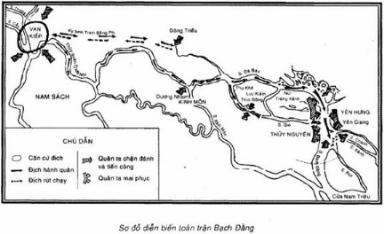
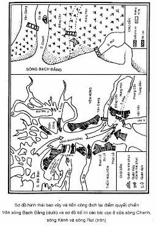

NGÀY 9 THÁNG 4 NĂM 1288
Đến nay nước sông vẫn chảy hoài
Mà nhục quân thù khôn rửa
TRƯƠNG HÁN SIÊU
Phú sông Bạch Đằng
Bấy giờ là thế kỷ XIII.
Từ những thảo nguyên mênh mông vùng Trung á, từng đoàn kỵ binh của dế quốc Mông Cổ cuốn theo cát bụi và máu lửa, ào ạt kéo sang phương Tây, phương Đông rồi phương Nam, gieo chết chóc và tàn hại hầu khắp châu Á, châu Âu. Hàng trăm thành thị lớn và kinh đô của nhiều nước bị phá hủy, hàng ngàn làng mạc bị đốt phá và san bằng, mấy triệu người bị giết hại. Trong vòng mấy chục năm đầu thế kỷ XIII, vua chúa Mông Cổ đã thành lập một đế quốc rộng lớn từ bờ Thái Bình Dương đến bờ Hắc Hải. Nửa thế giới kinh hoàng, lo sợ, ngập chìm trong đau thương.
Phrích - một nhà thơ đương thời người Ác-mê-ni (1210-1290) - đã viết những lời thơ lâm li về sự tàn ác của chúng:
“Không còn một dòng suối, một con sông nào không tràn đầy nước mắt chúng ta,
Không còn một ngọn núi, một cánh đồng nào không bị quân Tác-ta giày xéo”.
(Sử liệu Ác-mê-ni về người Mông Cổ, dẫn theo Cuộc kháng chiẽn chống xâm lược Nguyên – Mông thế kỷ XIII của Hà Văn Tấn - Phạm Thị Tâm, Nhà xuất bản Khoa học xã hội, Hà Nội, 1972, trang 38. Tác-ta vốn là bộ lạc người Tuyếc ở Mông Cổ, là lực lượng quan trọng trong quân đội viễn chinh của đế quốc này. Ở đây chỉ quân xâm lược Mông Cổ, chữ Hán là Thát Đát).
Thế nhưng vó ngựa và chiến thuyền của quân giặc cường bạo đó đã ba lần bị chặn đứng và bị đánh tan tác trận đất Đại Việt. Lịch sử xâm lược của đế quốc Mông - Nguyên đối với nước ta là lịch sử thất bại thảm hại. Và, trận Bạch Đằng năm 1288 đã chôn vùi đạo quân cuối cùng, đập tan mưu đồ xâm lược của đế quốc cường thịnh và tàn bạo bậc nhất trong thời đại bấy giờ.
Ý chí quyết chiến quyết thắng, tinh thần dũng cảm và tài thao lược kiệt xuất của tồ tiên ta ở thế kỷ XIII đã viết nên trang sử chống ngoại xâm bất hủ mà chiến thắng Bạch Đằng được khắc sâu trong ký ức nhân dân như một chiến công thần thoại, một niềm tự hào chính đáng của dân tộc ta.
Cuộc đọ sức đầu tiên xảy ra năm 1258.
Đầu năm ấy, hơn 3 vạn quân Mông Cổ (Đạo quân Mông Cổ do Ngột Lương Hợp Thai chỉ huy khi đánh xuống Vân Nam có trên 3 vạn quân đã bị tiêu diệt rất nhiều, nhưng liền đó hắn lại huy động 2 vạn quân người Thoán Bặc (người Di ở Vân Nam) bổ sung vào làm quân tiên phong. Đạo quân Mông Cổ xâm lược nước ta lần này có khoảng hơn 3 vạn quân), dưới quyền chỉ huy của tướng Ngột Lương Hợp Thai (U ri-ang-kha-đai) kéo vào Đại Việt.
Tháng giêng, quân giặc theo lưu vực sông Hồng tiến xuống Bình Lệ Nguyên (Vĩnh Phú). Ở đây quân ta do vua Trần Thái Tông trực tiếp chỉ huy lập chiến tuyến chặn đánh quyết liệt. Nhưng thế giặc đang mạnh, quân ta rút về giữ Phù Lỗ rồi rút về Thăng Long. Quân địch ào ạt vượt qua các chiến tuyến tiến xuống, uy hiếp Thăng Long.
Triều đình và nhân dân tạm thời rời khỏi kinh thành. Quân đội chủ lực rút về đóng giữ vùng Thiên Mạc (Khoái Châu, Hưng Yên) để bảo toàn lực lượng. Kinh thành trống rỗng, không bóng người và lương thực. Trong ngục tối chỉ còn hai tên sứ giả Mông Cổ được phái sang trước đó, bị trói gô, một tên đã chết gục. Mấy ngày sau, chúng bị cạn lương, gặp nhiều khó khăn, mệt mỏi và suy yếu. Ngày 29 tháng giêng, quân ta mở trận phản công chiến lược đánh vào Đông Bộ Đầu (bến sông Hồng, khoảng phía trên cầu Long Biên, Hà Nội). Giặc bị đánh bật khỏi Thăng Long, theo dọc sông Hồng rút chạy về nước. Dọc đường, chúng bị dân binh địa phương chặn đánh. Bị thất bại nặng nề, số còn lại chạy một mạch về Vân Nam.
Vào giữa thế kỷ XIII, quân Mông Cổ đã dần dần đánh bại nhà Tống, chiếm được toàn bộ lãnh thổ Trung Quốc. Hốt Tất Liệt (Khu-bi-lai) lên làm vua, đổi quốc hiệu là Nguyên và ráo riết chuẩn bị cuộc xâm lược nước ta lần nữa. Nhà Nguyên huy động một lực lượng viễn chinh rất lớn, theo Đại Việt sử ký toàn thư là 50 vạn quân, đặt dưới quyền tồng chỉ huy của một thân vương, con trai Hốt Tất Liệt là Thoát Hoan (Tô-gan).
Dưới sự tổ chức và lãnh đạo của triều Trần, cả đất nước đứng lên trong tư thế sẵn sàng đánh giặc. Triều đình mở hội nghị Bình Than và Diên Hồng nêu cao quyết tâm kháng chiến cứu nước. Quân dân ta dưới quyền tổng chỉ huy của Trần Quốc Tuấn và các tướng Trần Quang Khải, Trần Nhật Quật, đã chặn địch từng bước ở các cửa ải biên giới, ở sông Hồng, ở Nghệ An và Thanh Hóa. Cũng như lần trước, triều đình và quân ta lại rút khỏi Thăng Long về vùng Thiên Trường, Trường Yên (thuộc các vùng Nam Định và Ninh Bình) rồi vào Thanh Hóa. Nhân dân khắp nơi, từ miền núi đến miền xuôi, từ đồng bằng sông Hồng đến vùng Thanh Nghệ đều thực hiện vườn không nhà trống, triệt nguồn cướp bóc lương thực của địch, đẩy mạnh chiến tranh du kích; bao vây tiêu hao quân địch. Tháng 5 năm 1285, giặc dã mệt mỏi, lương thực cạn, sức lực suy yếu sa vào thế bị động. Quân ta từ Thanh Hóa tiến ra Bắc mở đớt phản công chiến lược, tổ chức những cuộc tiến công mãnh liệt vào các căn cứ của địch. Quân chủ lực phối hợp với dân binh đánh bạ i quân địch ở các trận A Lỗ (Thái Bình), Tây Kết (Khoái Châu, Hưng Yên), Hàm Tử (Khoái Châu, Hưng Yên), Chương Dương (Thường Tín, Hà Tây), tiêu diệt nhiều sinh lực địch, rồi thừa thắng bao vây và tiến công mạnh quân địch ở Thăng Long. Bị thất bại liên tiếp Thoát Hoan và các tướng tìm đường tháo chạy về nước. Nhưng chúng bị chặn đánh ở Sông Cầu và bị thua to ở Vạn Kiếp (Chí Linh, Hải Dương). Đạo quân Toa Đô cũng bị đánh tan ở Tây Kết. Toa Đô bị chém đầu tại trận. Cuối tháng 6 năm đó, toàn bộ quân địch bị quét khỏi bờ cõi nước ta.
Hai lần xâm lược, hai lần bị thất bại thảm hại, Hốt Tất Liệt càng tức tối muốn tổ chức ngay cuộc xâm lược lần thứ ba. Hắn bãi bỏ kế hoạch đánh Nhật Bản đã được chuẩn bị từ trước và dồn sức cho cuộc viễn chinh lần này.
Khác với hai lần trước, trong lần xâm lược thứ ba, ngoài bộ binh (bao gồm cả kỵ binh ), nhà Nguyên còn dùng một lực lượng thủy binh khá mạnh và mang theo lương thực đầy đủ. Hàng năm chục vạn quân (Đại Việt sù ký toàn thư, bản dịch đã dẫn, tập II, trang 58-60) đượ chia thành ba đạo:
- Đạo quân do Thoát Hoan chỉ huy chiếm phần lớn quân số, theo đường Lạng Sơn tiến vào.
- Đạo quân do Ái Lỗ chỉ huy từ Vân Nam theo sông Hồng tiến xuống.
- Đạo thủy quân do Ô Mã Nhi, Phàn Tiếp chỉ huy với hơn 600 chiến thuyền từ Quảng Đông (Trung Quốc) theo sông Bạch Đằng tiến vào rồi hội quân ở Vạn Kiếp (Chí Linh, Hải Dương).
Ngoài ra, có đội thuyền vận tải do Trương Văn Hổ cầm đầu chở 70 vạn hộc lương theo sau.
Đối với Hốt Tất Liệt và triều đình nhà Nguyên, cuộc viễn chinh lần thứ 3, ngoài âm mưu xâm chiếm nước ta mở đường bành trướng xuống Đông Nam á, còn là cuộc phục thù cay cú của tên bạo chúa phong kiến cuồng chiến. Những tướng từng chỉ huy quân địch đều thiện chiến, hầu hết đã quen thuộc chiến trường Đại Việt.
Thân vương Thoát Hoan giữ chức tổng chỉ huy là người đã cầm đầu cuộc xâm lược lần trước. Chính hắn đã mở những cuộc hành quân đầy máu lửa từ rừng núi Lạng Sơn, Lạng Giang đến Vạn Kiếp, Thăng Long, giết chết bao nhiêu dân lành, triệt hạ nhiều làng mạc của ta.
Ô Mã Nhi, Phàn Tiếp, Áo Lỗ Xích, Lưu Khuê là những viên tướng theo A Lí Hải Nha (A-rít-kha-y-a), phụ tá của Thoát Hoan, trong cuộc xâm lược thứ hai đã từng hoạt động ở khắp vùng đồng bằng sông Hồng.
Ô Mã Nhi mang danh hiệu "dũng sĩ" - Ô Mã Nhi Bạt Đô - quen thủy chiến, đã từng thống lĩnh thủy binh ở vùng sông Lục Đầu, Bài Than, Đông Ngạn và dẫn quân đuổi theo vua Trần về Thiên Trường (Nam Định).
Phàn Tiếp lần này được thăng làm tham tri chính sự, quyền ngang với Ô Mã Nhi. Trương Văn Hổ là một tên cướp biển vùng vẫy khắp miền biển Quảng Đông, Phúc Kiến (Trung Quốc) đã đầu hàng nhà Nguyên.
Trước khi tiến quân, bọn cướp nước chuẩn bị khá chu đáo Từ kinh nghiệm thất bại trước, lần này chúa Nguyên ra lệnh cho Thoát Hoan, Áo Lỗ Xích phải hành quân thận trọng: "Không được cho Giao Chỉ là nước nhỏ mà khinh thường" (Nguyên sử, An Nam truyện, q. 209).
Về phía quân dân Đại Việt thì từ cuộc kháng chiến thứ hai đến cuộc kháng chiến thứ ba, thời gian chuẩn bị chỉ có hai năm. Tình hình hết sức khẩn trương. Nhưng quân dân ta bước vào cuộc kháng chiến thứ ba với một khí thế đầy quyết tâm, tin tưởng. Qua kinh nghiệm dày dạn, phong phú của hai cuộc kháng chiến trước, Trần Quốc Tuấn đã đề ra kế hoạch đánh giặc rất chủ động, tài giỏi. Buồi đầu, trước thế mạnh của địch, quân ta tạm thời rút lui dể bảo toàn lực lượng. Nhưng khắp nơi, nhân dân trên đường tiến quân và trong vùng chiếm đóng của địch, được lệnh cất giấu lương thực, kiên quyết triệt nguồn cướp lương của giặc, đồng thời cùng với các đội dân binh đẩy mạnh hoạt động du kích tiêu hao sinh lực địch. Trong cuộc chiến tranh này, vùng biển đông - bắc giữ một vai trò quan trọng. Đó là đường tiến quân của thủy binh và đoàn thuyền tải lương của giặc. Phó tướng Nhân Huệ Vương Trần Khánh Dư chỉ huy mặt trận này có nhiệm vụ ngăn chặn thủy binh giặc, tiêu diệt đoàn thuyền tải lương, làm thất bại ngay từ đầu kế hoạch hậu cần của chúng.
Được tin giặc tràn vào biên giới, vua Trần Nhân Tông hỏi Trần Quốc Tuấn: "Giặc đến làm thế nào”. Vị quốc công tiết chế thống lĩnh toàn bộ lực lượng kháng chiến khẳng định: "Năm nay giặc đến dễ đánh" (Đại việt sứ toàn thư, sách đã dẫn, tập II, trang 59).
Cuối năm 1287, quân Nguyên từ nhiều hướng tiến vào nước ta. Đạo quân chủ lực do Thoát Hoan trực tiếp chỉ huy, từ Quảng Tây ào ạt vượt biên giới tiến vào vùng Lạng Sơn. Trần Quốc Tuấn đích thân chỉ huy mặt trận xung yếu này. Theo kế hoạch của vị tổng chỉ huy, quân ta chặn đánh quyết liệt Ở một số nơi rồi dần dần rút lui tránh quyết chiến với giác. Quân địch tiến xuống Vạn Kiếp.
Ở vùng biển đông - bắc, thủy binh của Ô Mã Nhi bị chặn đánh ở Ngọc Sơn (mũi Ngọc, Móng Cái, Quảng Ninh), An Bang (Quảng Yên, Quảng Ninh). Chúng có bị thiệt hại nhưng vẫn mở đường theo sông Bạch Đằng tiến lên Vạn Kiếp hội quân với Thoát Hoan. Trong lúc đó, đoàn thuyền lương của Trương Văn Hổ chở nặng còn chậm chạp tiến theo sau, trên đường vào vịnh Bái Tử Long và Hạ Long. Phó tướng Trần Khánh Dư đã mưu trí bố trí quân mai phục ở Vân Đồn - Cửa Lục (Quảng Ninh) đón đánh, tiêu diệt toàn bộ đoàn thuyền lương của địch. Chiến thắng Vân Đồn - Cửa Lục đã đánh vào chỗ yếu có tính chất chiến lược của địch, làm phá sản từ đầu kế hoạch tiếp tế lương thực của chúng, do dó ảnh hưởng đến toàn cuộc chiến tranh xâm lược lần thứ ba của quân Nguyên, tạo điều kiện thuận lợi cho quân dân ta nhanh chóng chuyển nên phản công chiến lược.
Thoát Hoan xây dựng vùng Vạn Kiếp thành một căn cứ quân sự, để một số quân ở lại đóng giữ, rồi tiếp tục tiến về Thăng Long. Đạo quân Ái Lỗ cũng từ Vân Nam tiến xuống phối hợp. Triều đình và quân ta tạm thời rút khỏi kinh thành. Từ Thăng Long. Thoát Hoan huy động quân thủy bộ theo lưu vực sông Hồng đuổi theo ráo riết. Ô Mã Nhi de dọa vua Trần: “Ngươi chạy lên trời ta theo lên trời, ngươi chạy xuống đất ta theo xuống đất, ngươi trốn lên núi ta theo lên núi, ngươi lặn xuống nước ta theo xuống nước” (Từ Minh Thiện, Thiên Nam hành ký, bản Thuyết phu, trang 12). Nhưng không sao bắt được những người lãnh đạo kháng chiến của ta, quân giặc mặc sức tàn sát nhân dân. Chúng sục sạo vào phủ Long Hưng (Đông Hưng, Thái Bình), quật lăng mộ Trần Thái Tông - ông vua anh hùng của cuộc kháng chiến lần thứ nhất. Chúng triệt hạ các điền trang thái ấp, gây trăm ngàn tội ác. Sứ nhà Nguyên cũng phải ghi nhận chúng "đốt phá chùa chiền, đào bới lăng mộ, cướp giết người già trẻ con, tàn phá sản nghiệp của trăm họ, không có điều gì không làm" (Từ Minh Thiện, Thiên Nam hành ký, bản Thuyết phu, trang 16). Một dải đồng bằng từ Thăng Long đến các lộ Hồng, Khoái đều tiêu điều, xơ xác.
Quân địch đã chiếm được kinh thành và nhiều vùng rộng lớn nhưng âm mưu đánh nhanh thắng nhanh, tiêu diệt quân chủ lực và bộ máy lãnh đạo kháng chiến của ta không thực hiện được. Cùng với cuộc chiến đấu ở chiến trường ven biển tiêu diệt thuyền lương giặc, nhân dân các lộ, phủ đều thực hiện vườn không nhà trống, thành lập các đội dân binh chiến đấu chống giặc cướp bóc lương thực, tiêu hao lực lượng địch. Nguyên sử chép “Người Giao Chỉ đem hết thóc gạo cất giấu đi nơi khác" (Nguyên sử, Phàn Tiếp truyện, bản in Thương vụ ấn thư quán).
Đã gần 2 tháng đóng ở Thăng Long, mấy chục vạn quân Nguyên lâm vào tình trạng thiếu lương thực. Ngày 10 tháng 2 năm 1288, Ô Mã Nhi được lệnh đem thủy quân đón đoàn thuyền lương của Trương Văn Hổ - vì tưởng rằng bọn này đang trên đường vào Đại Việt. Thủy quân địch đến cửa Đại Bàng (Văn Úc, Hải Phòng) bị quân ta chặn đánh, bắt được hơn 300 thuyền chiến (Nguyễn Sĩ Chân trong bài Một số tư liệu mới phát hiện về hành cung Lưu Đồn và trận thủy chiến cửa Đại Bàng (08/01/1288) tạp chí Nghiên cứu lịch sử số 3-1997 lại cho cửa Đại Bàng là cửa Sông Hóa (còn gọi là cửa Thái Bình) thuộc tỉnh Thái Bình. Xin ghi lại để bạn đọc tham khảo.). Bị thiệt hại nặng, Ô Mã Nhi vẫn phải cố gắng đi tìm kiếm đoàn thuyền lương. Đến Tháp Sơn (Đồ Sơn, Hải Phòng), chúng lại bị quân ta đón đánh. Và đến An Bang thì chúng biết đoàn thuyền lương đã bị tiêu diệt, Ô Mã Nhi theo đường sông Bạch Đằng trở lại Vạn Kiếp.
Đến đây, chiến lược đánh nhanh thắng nhanh bị phá sản và hy vọng chiếm đóng lâu dài của Thoát Hoan cũng tiêu tan theo đoàn thuyền lương của Trương Văn Hổ. Những thắng lợi của ta ở Đại Bàng và Tháp Sơn lại gây thêm cho chúng những tồn thất nặng nề.
Thắng lợi của quân dân miền đông - bắc khiến cho Thoát Hoan mau chóng sa vào thế cô lập, khốn quẫn và suy yếu. Mất sạch lương thực, lại bị tiêu diệt một bộ phận thủy quân, chúng hoang mang lo lắng. Giặc đi đến đâu đều gặp vườn không nhà trống và những trận chiến đấu bền bỉ, mưu trí của quân dân ta. âm mưu kéo dài và mở rộng chiến tranh không thể nào thực hiện được. Từ những trận Đại Bàng, Tháp Sơn và các trận đánh tiêu hao liên tục của ta, chúng dự đoán chủ lực của ta sắp ra quân và sẽ có những trận phản công mạnh mẽ giáng lên đầu chúng như những trận Tây Kết, Hàm Tử, Chương Dương của cuộc kháng chiến lần thứ hai cách ba năm trước. Thoát Hoan và các tướng lĩnh của hắn lo lắng thấy đóng quân ở Thăng Long rất nguy hiểm.
Đầu tháng 3, Thoát Hoan phải bỏ Thăng Long chuyển quân về Vạn Kiếp là căn cứ quân sự chúng đã dày công xây dựng khi mới tiến quân vào nước ta. Nhưng căn cứ Vạn Kiếp cũng không còn là nơi an toàn của chúng nữa. Ban đêm, quân ta mở những trận tập kích liên tiếp vào đồn trại giặc làm cho chúng bị tiêu hao, mệt mỏi, rã rời.
Nguy cơ bị tiêu diệt đã đến, chúng bàn với nhau: "Ở Giao Chỉ không có thành trì để giữ, không có lương thực để ăn mà thuyền lương của Trương Văn Hổ không đến. Vả lại khí trời nóng nực, lương hết, quân mệt, không lấy gí chống giữ lâu được lấy làm hổ thẹn cho triều đình, chi bằng nên toàn quân mà về thì hơn” (Nguyên sử, q. 209, An Nam truyện). Cuối cùng, chúng nhất trí với nhau “nên về, không nên ở" (An Nam chí lược, q. 4, bản chép tay) hòng bảo toàn lực lượng, tránh những đòn phản công của quân ta.
Nhưng rút về bằng cách nào? Có kẻ muốn hủy thuyền đi bộ, có kẻ muốn đi cả bộ cả thuyền. Bàn luận phân vân, đầu óc Thoát Hoan càng rối loạn. Hủy bỏ hơn 600 chiến thuyền một lúc, không phải là chuyện đơn giản, vừa thiệt hại vừa nhục nhã. Vả lại tập trung mấy chục vạn quân rút theo đường bộ thì chậm chạp và tính mạng thật khó an toàn. Cuộc rút lui đường bộ lần xâm lược trước đã cho chúng một bài học: trận Vạn Kiếp tiêu diệt phần lớn lực lượng của chúng và ngay Thoát Hoan cũng phải chui vào ống động mới thoát chết qua được biên giới. Cuối cùng, Thoát Hoan quyết định chia quân hàm hai đạo theo hai dường thủy bộ rút về nước.
- Quân bộ do Thoát Hoan chỉ huy đi theo đường Lạng Sơn, có A Bát Xích (A-ba-tri) dẫn kỵ binh đi trước mở đường.
- Quân thủy do Ô Mã Nhi, Phàn Tiếp chỉ huy rút về theo đường sông Bạch Đằng. Cùng theo đạo quân này có thân vương Tích Lệ Cơ và viên quan Vạn hộ thủy quân Trương Ngọc. Để bảo đảm an toàn hơn, Thoát Hoan phái một đội kỵ binh theo dọc sông hộ tống.
*
***
Trần Quốc Tuấn theo dõi chặt chẽ mọi âm mưu, hành động của địch và kiên quyết không cho chúng thoát khỏi những đòn trừng phạt quyết định của quân dân ta.
Trong hai lần kháng chiến trước, triều Trần và Trần Quốc Tuấn đã tổ chức những trận phản công đánh vào căn cứ đóng quân của địch, đồng thời cũng đã mở những trận quyết chiến tiêu diệt quân địch trên đường rút lui.
Trong cuôc kháng chiến thứ nhất, số quân địch chỉ hơn 3 vạn. Quân ta mở cuộc phản công vào Đông Bộ Đầu đánh thẳng vào đại bản doanh của địch. Chúng bị đánh bật ra khỏi Thăng Long và tháo chạy thảm hại về nước.
Trong cuộc kháng chiến thứ hai, tổng số quân xâm lược của địch lên đến khoảng nửa triệu. Vào giai đoạn phản công chiến lược, quân dân ta trước hết tiến công tiêu diệt các cứ điềm của địch bảo vệ mặt nam Thăng Long như Tây Kết, Hàm Tử, Chương Dương rồi tiến lên bao vây uy hiếp trung tâm đầu não của địch ở Thăng Long. Và khi quân địch rút lui, quân dân ta đã chặn dường tiêu diệt đại bộ phận.
Nhưng trong cuộc kháng chiến thứ ba này, quân ta chưa phản công, quân địch đã từ Thăng Long rút về Vạn Kiếp, rồi từ Vạn Kiếp chuẩn bị rút về nước. Biết rõ âm mưu của địch, Trần Quốc Tuấn chủ trương không mở trận quyết chiến đánh vào căn cứ Vạn Kiếp.
Vạn Kiếp là một căn cứ quân sự rất lớn của địch. Ở đây có sông Lục Đầu, có núi Chí Linh, núi Phả Lại, địa thế hiểm trở, vị trí cơ động cả mặt thủy, mặt bộ. Quân địch lợi dụng địa hình, dựng doanh trại kho tàng, lập rào lũy phòng vệ chặt chẽ, biến khu Vạn Kiếp thành một căn cứ quân sự phối hợp cả quân bộ lẫn quân thủy. Cả ba đạo quân xâm lược của Thoát Hoan gồm hàng chục vạn quân thủy bộ đều tập trung về Vạn Kiếp. Quân địch tuy có bị tổn thất, nhưng số lượng còn rất đông, vũ khí còn đầy đủ. Đánh vào một căn cứ quân sự tập trung và có phòng vệ như vậy, quân ta sẽ gặp nhiều khó khăn.
Vì vậy, quân ta không bao vây và không mở những trận tiến công lớn vào căn cứ Vạn Kiếp. Theo kế hoạch của Trần Quốc Tuấn, quân dân ta mở rộng các hoạt động du kích, đánh bại mọi cuộc hành quân cướp bóc lương thực của dịch và uy hiếp mạnh vùng ngoại vi Vạn Kiếp. Từ Vạn Kiếp, Thoát Hoan sai quân đánh ra Trúc Động (Thủy Nguyên, Hải Phòng), An Bang (Quảng Yên, Quảng Ninh) đều bị thiệt hại nặng nề. Quân ta chiếm lại các vị trí quân sự quan trọng xung quanh khu Vạn Kiếp. Đêm đêm, những đội quân cảm tử của ta bất ngờ tiến công vào đồn trại giặc, tiêu hao sinh lực, đốt phá kho tàng, doanh trại của chúng. Bị quân ta uy hiếp liên tục, quân địch lương thực đã cạn, số quân lại bị hao hụt, quân lính ốm đau mỏi mệt và tinh thần càng ngày càng hoang mang, chán nản. Thoát Hoan tức tối có lúc gần như phát điên, nhưng không tìm ra biện pháp đối phó nào ngoài cách sớm rút lui để tránh nguy cơ bị tiêu diệt. Trần Quốc Tuấn chủ trương uy hiếp buộc địch rút chạy và sẽ đánh những trận tiêu diệt địch trên đường rút chạy.
Kinh nghiệm hai lần kháng chiến trước, nhất là lần thứ hai, đánh địch trên đường rút chạy, quân ta đã thu được kết quả to lớn. Trận Vạn Kiếp tháng 6 năm 1285 tiêu diệt đại bộ phận đạo quân Thoát Hoan trên đường tháo chạy về nước. Trận Tây Kết lần thứ hai cũng vào khoảng thời gian đó, chặn đường tiêu diệt hầu hết đạo quân thủy của địch, giết chết thống lĩnh Toa Đô tại trận, Ô Mã Nhi, Lưu Khuê phải dùng thuyền nhẹ trốn thoát ra biển.
Trên cơ sở nắm vững âm mưu của địch và kinh nghiệm phong phú của những cuộc kháng chiến trước, lần này vị thống soái với danh hiệu Quốc công tiết chế Hưng Đạo vương Trần Quốc Tuấn chủ trương mở những trận quyết chiến tiêu diệt địch vào lúc chúng đang rút lui. Đó là một chủ trương chiến lược đúng đắn, sáng tạo, thể hiện quyết tâm tiêu diệt sinh lực địch, đánh bại ý chí xâm lược của vua chúa Mông - Nguyên. Đánh địch trên đường rút lui là lúc chúng đang vận động ngoài căn cứ, sức lực mệt mỏi, tinh thần hoang mang, tâm lý thất bại nặng nề. Đó là thời cơ rất thuận lợi để quân dân ta tiêu diệt triệt để sinh lực địch, đập tan ý chí xâm lược của kẻ thù.
Xưa kia Binh pháp Tôn Tử đề ra nguyên tắc “địch rút lui về nước thì đừng bao vây ngăn chặn, bao vây địch thì cần để trống một mặt, không nên vây kín, địch đến lúc cùng khốn thì không nên bức bách quá" (Binh pháp Tôn Tử, Nhà xuất bản Quân đội nhân dân, Hà Nội, 1964, trang 84). Lý luận của Tôn Tử và các nhà quân sự Trung Quốc cổ đại đã có ảnh hưởng lớn trong nghệ thuật quân sự xưa ở nhiều nước phương Đông. Trần Quốc Tuấn đã nghiên cứu kỹ, nhưng ông hoàn toàn không làm như vậy. ông đã chọn đúng lúc địch rút lui để tiêu diệt gọn. Chủ trương sáng tạo đó không phải xuất phát từ một nguyên tắc cứng nhắc của binh pháp mà căn cứ vào tình hình thực tế của cuộc chiến tranh, đánh giá đúng tính chất ngoan cố và âm mưu quỷ quyệt của kẻ thù.
Kẻ thù của dân tộc ta lúc bấy giờ là đế quốc Mông - Nguyên, một đế quốc cường thịnh, tàn bạo, hiếu chiến. Chúng có tham vọng làm bá chủ thế giới và quyết tâm xâm chiếm nước ta để mở đường bành trướng xuống Đông Nam Á. Hai lần xâm lược trước đã bị thất bại thảm hại mà chúng vẫn chưa chịu từ bỏ dã tâm cướp nước ta, quyết mở cuộc viễn chinh lần thứ ba. Lần này tuy đã bị một số trận thua đau, tình thế gặp nhiều khó khăn, nhưng lực lượng của chúng chưa bị tiêu diệt nặng và ý chí xâm lược chưa bị sụp đổ. Âm mưu của Thoát Hoan là muốn chủ động tổ chức cuộc rút lui an toàn về nước để tránh những đòn phản công của quân dân ta, rồi sẽ tính kế và chuẩn bị thêm lực lượng sang xâm lược nước ta lần nữa. Chính trong hoàn cảnh đó, Trần Quốc Tuấn đã đề ra chủ trương đúng đắn và sáng suốt là quyết không để cho quân địch an toàn rút lui về nước để rồi lại tiếp tục âm mưu xâm lược, mà phải nhân khi chúng rút lui trong tình trạng lực xuống, thế suy giáng cho chúng những đòn phản công quyết định. Có như vậy mới đánh bại được ý chí xâm lược của vua Nguyên, giành và giữ vững nền độc lập dân tộc, bảo vệ chủ quyền và lãnh thổ toàn vẹn của đất nước.
Từ nhiều nguồn tin tức thu thập ở Thăng Long, ở Vạn Kiếp, quân ta đã nắm được lực lượng và kế hoạch rút lui của địch. Tổng số quân xâm lược khi tiến vào nước ta – theo Đại Việt sử ký toàn thư - là 50 vạn quân và riêng đạo quân Thoát Hoan tiến vào vùng Lạng Sơn đã đến 30 vạn quân. Sau mấy tháng xâm lược, quân địch có bị hao tổn, nhất là thủy quân, nhưng số quân vẫn rất đông. Số quân đó tập trung ở Vạn Kiếp và sẽ theo hai đường thủy, bộ rút về nước. Một vấn đề có ý nghĩa chiến lược quan trọng được đặt ra và giải quyết là tiêu diệt địch trên cả hai hướng hay trên một hướng, hướng nào là chủ yếu.
Bộ binh và kỵ binh là binh lực chủ yếu và sở trường của đế quốc Mông - Nguyên. Đại bộ phận quân địch rút lui bằng đường bộ dưới quyền chỉ huy trực tiếp của Thoát Hoan. Số quân rút lui bằng đường thủy còn tùy thuộc vào số lượng khả năng vận chuyển của thuyền chiến địch. Khi tiến sang xâm lược nước ta cuối năm 1287, đoàn thuyền chiến của địch gồm 620 chiếc (Theo Nguyên sử (q. 209) và An Nam chí lược (q. 4), lúc đầu nhà Nguyên huy động 500 thuyền chiến sang đánh nước ta. Sau đó, theo Nguyên sử (q. 14), nhà Nguyên bổ sung thêm 120 chiếc lấy ở Quỳnh Thôn (Hải Nam) và Nam Ninh (Quảng Tây), đưa tổng số thuyền chiến của địch lên 620 chiếc). Sau mấy trận đánh ở chiến trường vùng ven biển đông bắc, số thuyền chiến của địch có bị hao hụt, nhưng chúng lại cướp bóc và đóng thêm thuyền để bù vào. Số thuyền chiến địch sử dụng trong cuộc rút lui này có khoảng trên 600 chiếc. Theo những tài liệu đương thời thì mỗi thuyền chiến của quân Nguyên lúc đó có thể chở được trên dưới 100 người (Theo The book of Marco Polo của H. Yule, London, 1921), thì mỗi thuyền quân Nguyên chở được hơn 100 binh sĩ. Theo Nguyên sử (q. 13 và 129) thì lần đánh Chăm-pa quân Nguyên dùng 200 thuyền chiến chở 15.000 quân, nghĩa là mỗi chiếc chơ khoảng dưới 100 người). Như vậy số quân địch rút lui bằng đường thủy có khoảng trên 6 vạn. Biết rõ nhược điểm của đạo quân này - số quân ít, rút lui bằng đường thủy nguy hiểm, phải đương đầu với quân thủy mạnh và sở trường của đối phương, Thoát Hoan cho Ô Mã Nhi, Phàn Tiếp rút quân trước và phái một đội kỵ binh đi trên bờ hộ tống ra đến cửa biển. Đạo quân bộ đông và mạnh của Thoát Hoan vẫn đóng quân ở Vạn Kiếp để hỗ trợ cho quân thủy rút lui an toàn rồi mới rút quân theo đường bộ qua Lạng Sơn.
Quyết tâm của Trần Quốc Tuấn và quân dân ta là tiêu diệt tới mức tối đa cả hai đạo quân địch, không cho chúng thoát khỏi những đòn phản công quyết liệt. Nhưng rõ ràng quân ta không đủ lực lượng để đồng thời bố trí hai trận đánh lớn trên hai hướng rút lui tiêu diệt gọn hai đạo quân thủy bộ của địch.
Nếu ta tập trung lực lượng tiêu diệt đạo quân bộ thì đạo quân thủy rút lui trước sẽ thoát khỏi đòn trừng phạt của quân dân ta. Hơn nữa, tiến công đạo quân bộ là đánh vào chỗ mạnh, chỗ sở trường của địch. Đạo quân này tập trung phần lớn lực lượng viễn chinh của địch, gồm hàng chục vạn quân, chưa bị suy suyển gì mấy trên đất nước ta.
Với tư tưởng “giặc cậy trường trận ta cậy đoản binh, lấy đoản chế trường", Trần Quốc Tuấn chủ trương trước hết tập trung lực lượng tiêu diệt thật gọn, thật nhanh đạo quân thủy của địch. Quân ta có đủ khả năng thực hiện một trận quyết chiến chiến lược như vậy. Đạo quân thủy bị tiêu diệt sẽ tác động mạnh mẽ đến tinh thần của đạo quân bộ rút lui sau.
Bọn này đông nhưng đang bị uy hiếp liên tục và gặp nhiều khó khăn về các mặt. Tin thất bại thảm hại của đạo quân thủy sẽ làm cho tinh thần bọn chúng vốn đã suy yếu, càng bị sụp đổ nhanh chóng. Chúng sẽ tháo chạy trong cảnh hỗn loạn với tâm lý thất bại. Trên đường rút chạy của địch, ta không chặn lại tiêu diệt toàn bộ, không đánh những trận tiêu diệt lớn. Nhưng theo kế hoạch của Trần Quốc Tuấn, quân chủ lực của triều đình phối hợp với các đội dân binh, bố trí những trận phục kích, tập kích, truy kích, đánh địch liên tục trên đoạn đường dài từ Vạn Kiếp đến tận biên giới. Đại quân của ta sau khi tiêu diệt đạo quân thủy có thể nhanh chóng vận động đến tham gia những trận đánh tiêu diệt đạo quân bộ. Như vậy, cả hai đạo quân thủy bộ của địch đều bị tiêu diệt, trong đó đạo quân thủy bị tiêu diệt gọn, toàn bộ; đạo quân bộ bị tiêu diệt liên tiếp từng bộ phận một và cuối cùng cũng bị tiêu diệt nặng nề.
Chọn đạo quân thủy của Ô Mã Nhi, Phàn Tiếp làm đối tượng quyết chiến trước hết và chủ yếu là kết quả của sự xét đoán, phân tích rất chính xác, khoa học của vị thống soái thiên tài Trần Quốc Tuấn. Đánh vào đạo quân thủy là phát huy chỗ mạnh của ta, đánh vào chỗ yếu của địch, là gây chấn động mạnh đến tâm lý, tinh thần của đạo quân bộ, tạo điều kiện đề quân dân ta thừa thắng xốc tới tiêu diệt tiếp đạo quân này.
Trong cuộc kháng chiến thứ ba, chiến trường ven biển giữ một vị trí rất quan trọng. Nếu như trong cuộc kháng chiến trước, hai tháng cuối của đợt phản công chiến lược, Trần Quốc Tuấn lấy đồng bằng ven sông Hồng làm địa bàn mở các trận quyết chiến đầu tiên thì trong cuộc kháng chiến này, khi quân Nguyên tiến vào Vạn Kiếp, Thăng Long, quân ta lại rút về vùng ven biển và đông - bắc, chuẩn bị một địa bàn chiến lược quan trọng ở vùng này.
Đại quân của hai vua Trần Thánh Tông và Trần Nhân Tông chỉ huy kéo về đóng ở vùng Hiệp Môn (Kinh Môn, Hải Dương) (Theo Đại Nam nhất thống chí, phần tỉnh Hải Dương, và Bài thơ đề núi Dương Nham của Phạm Sư Mạnh đời Trần). Chủ lực của Trần Quốc Tuấn và Trần Khánh Dư đóng ở vùng Yên Hưng, Vân Đồn đến An Bang (đều thuộc Quảng Ninh). Nguyên sử (Lai-a-bát-xích truyện) ghi rõ: "Nhật Huyên (chỉ vua Trần - T.G.) không đầu hàng, mà lại chạy ra giữ cửa biển Trúc Động (Thủy Nguyên, Hải Phòng) và An Bang (Quảng Ninh)". Cho đến nay ở vùng An Hải (Hải Phòng), Phụ Dực (Thái Bình) vẫn còn những di tích các kho lương thực của quân đội nhà Trần, chẳng hạn thôn Phú Xá An Hải), thôn A Sào (Phụ Dực). Cả vùng Hải Đông, An Quảng là địa bàn chiến lược cho cuộc phản công của quân dân ta trong kháng chiến chống Nguyên lần thứ ba. Việc tập trung quân, chuẩn bị lương thực ở vùng này và những chiến thắng Vân Đồn, Đại Bàng, Tháp Sơn chứng tỏ: nhà chiến lược thiên tài Trần Quốc Tuấn đã sớm có ý định lấy miền ven biển đông bắc làm chiến trường chính, lấy đạo quân thủy của địch làm đối tượng liêu diệt chủ yếu để giành thắng lợi quyết định, kết thúc chiến tranh.
Thủy chiến vốn là sở trường của quân dân Đại Việt, đồng thời lại là chỗ yếu của quân Nguyên. Thủy binh giặc phần lớn là quân tân phụ (quân miền Nam của nhà Nam Tống cũ) vùng Quảng Đông, Quảng Nam (Nguyên sử, q. 209, An Nam truyện), tinh thần chiến đấu kém. Tuy được chuẩn bị công phu, thuyền vững chắc, vũ khí đầy đủ, song thủy binh địch đã chịu nhiều thất bại, lại không thiện chiến bằng kỵ binh và bộ binh. Mặt khác, trong đám quân rút lui theo đường thủy hẳn có cả một bộ phận kỵ binh và bộ binh chở bằng thuyền. Bọn này tất không quen tác chiến trên sông biển. Còn quân dân ta, sông nước đã quen, lại chiến đấu ngay trên đất nước mình, nắm vững địa hình địa vật, thuộc từng ngọn núi, khúc sông. Hai cuộc kháng chiến trước, thủy binh ta đã phối hợp chặt chẽ với bộ binh trong các trận quyết chiến ở Đông Bộ Đầu, Hàm Tử, Chương Dương, Tây Kết, tiêu diệt hàng chục vạn quân địch. Trong cuộc kháng chiến này, vừa qua quân thủy đã lập nên chiến công Vân Đồn - Cửa Lục vang dội. Giờ đây, miền ven biển là chiến trường chính, quân thủy lại phối hợp với quân bộ, đóng vai trò quân chủ lực giải quyết chiến trường. Việc lựa chọn đối tượng và địa bàn quyết chiến của Trần Quốc Tuấn là hoàn toàn chính xác. Trần Quốc Tuấn chính là người vạch kế hoạch phản công và trực tiếp chuẩn bị, chỉ huy trận quyết chiến này.
*
***
Từ Vạn Kiếp ra biển về nước đạo quân thủy của địch nhất định phải đi qua dòng sông Bạch Đằng. Trần Quốc Tuấn quyết định chọn sông Bạch Đằng làm trận địa quyết chiến tiêu diệt đạo quân địch rút lui theo đường thủy. Vào những ngày tháng 3 năm 1288, vị quốc công tiết chế lão luyện và mưu lược của quân dân ta đời Trần đã về vùng Bạch Đằng trực tiếp nghiên cứu địa hình và đích thân bài binh bố trận.
Đây là lần thứ ba trong quá trình giữ nước, tổ tiên ta chọn sông Bạch Đằng làm chiến địa để giành và giữ nền độc lập bảo vệ sự sống còn của Tổ quốc.
Năm 938, Ngô Quyền đã tiêu diệt quân Nam Hán tại sông này, kết thúc hoàn toàn nền thống trị của phong kiến phương Bắc, mở đầu truyền thống Bạch Đằng.
Sau đó 43 năm, năm 981, Lê Hoàn đại phá quân Tống tại đây
Lần này, sau 307 năm, lịch sử lại ghi thêm những chiến công cực kỳ oanh hệt của Trần Quốc Tuấn và quân dân thời Trần.

Sông Bạch Đằng hiểm yếu mà hùng vĩ. Trương Hán Siêu một nhà thơ nổi tiếng và là môn khách của Trần Quốc Tuấn, đã mô tả:
"Qua cửa Đại Than, ngược bến Đông Triều,
Đến sông Bạch Đằng, thuyền bơi một chiều.
Bát ngát sóng kình muôn dặm,
Thước tha đuôi trĩ một màu.
Nước trời một sắc, phong cảnh ba thu.
Bờ lau san sát, bến nước đìu hiu"
(Bạch Đằng Giang phú của Trương Hán Siêu, theo bản dịch trong Hợp tuyển thơ văn Việt Nam, t. II, Nhà xuất bản Văn hóa Hà Nội, 1962, tr. 36. Những trang sau, khi trích dẫn bài phú này, chúng tôi dùng bản dịch trên.).
Sông Bạch Đằng chảy giữa hai huyện Yên Hưng (Quảng Ninh) và Thủy Nguyên (Hải Phòng), cách vịnh Hạ Long, Cửa Lục khoảng 40 ki-lô-mét, cách Vạn Kiếp – nơi đóng quân của Thoát Hoan - hơn 30 ki-lô-mét theo ngược dòng sông Kinh Thầy. Việt sử thông giám cương mục theo Dư địa chí của Nguyễn Trãi cũng chép: "Sông Bạch Đằng rộng hơn hai dặm, ở đó có nhiều núi cao ngất, nhiều ngành sông đổ lại, sóng cồn man mác đến tận chân trời”. Ca dao dân gian địa phương có câu:
Nhất cao là núi U Bò,
Nhất đông chợ Giá, nhất to sông Rừng.
U Bò là ngọn núi thuộc dãy Tràng Kênh, sông Rừng là sông Bạch Đằng.
Nước sông Bạch Đằng hàng ngày theo thủy triều lên xuống. Khi triều lên cao, mặt sông Ở vùng Tràng Kênh trải rộng hơn 1.200 mét. Dòng sông đã rộng lại sâu. Khi triều xuống nước rặc, nơi sâu nhất đến 16 mét, trung bình giữa dòng cũng sâu từ 8 mét đến 11 mét (Theo bản đồ của Cục phòng thủ bờ biển năm 1956, tỷ lệ 1/69.400).
Theo sông Đá Bạc chảy xuống đến đầu dãy núi Tràng Kênh, sông Bạch Đằng phình to hẳn ra. Đó là nơi tập trung các dòng nước của các sông Khoai, sông Xinh bên tả ngạn và sông Gia Đước, sông Thải, sông Giá bên hữu ngạn đổ về. Sông Chanh, sông Kênh (cửa sông này ngày nay đã bị lấp) và sông Rút (còn gọi là sông Nam) là chi lưu bên tả ngạn Bạch Đằng chia bớt nước chảy ra Vịnh Hạ Long (Theo sự nghiên cứu về địa mạo thì sông Chanh, sông Kênh, sông Rút xưa kia là lạch thoát triều của sông Bạch Đằng. Hiện nay, vùng này phù sa đang bồi thêm. Vì thế sông Kênh chảy qua vùng Đồng Cốc (thuộc Yên Hưng) đang bị lấp cạn, cửa sông hiện nay chỉ còn vết trũng sâu mà nhân dân địa phương gọi là lũng Mắt Rồng sát bờ đê sông Bạch Đằng). Một khúc sông không dài quá 5 ki-lô-mét mà có 5 dòng nước đổ về và có 3 nhánh sông phụ đưa nước ra biển. Đó là hình thế của thượng lưu Bạch Đằng.
Ở lòng sông Bạch Đằng, từ bên hữu ngạn (thuộc xã Phục Lễ, Thủy Nguyên) có một cồn đá ngầm chạy qua đến quãng giữa cửa sông Chanh và sông Rút. Nhân dân địa phương gọi đó là ghềnh Cốc. Ghềnh Cốc có 5 cồn đá chắn ngang gần 3 phần 4 sông. Khi triều xuống thấp nhất, cồn cạn chỉ cách mặt nước 0,40 mét, cồn sâu cách 3,70 mét, thuyền đi nhẹ trên sông có thể thấy được những cồn đá (Thời pháp thống trị, chúng đà đào sâu những cồn đá bên tả ngạn, đặt cột đèn tín hiệu cho tàu thuyền qua lại lưu ý. Khi nước xuống thấp, tàu thuyền qua đây không đi vào lạch sâu thường bị va vào đá và bị đắm). Ghềnh Cốc cấu tạo bằng đế gốc do chân núi đá Tràng Kênh kéo dài ra.
Ghềnh Cốc án ngữ ngang sông là một chướng ngại thiên nhiên của sông Bạch Đằng. Khi trời mưa to, gió lộng, thuyền qua lại thường gặp nguy hiểm. Ca dao dân gian đã mượn lời cha mẹ nhắn bảo khách qua sông:
“Con ơi nhớ lấy lời cha
Mưa nguồn, chớp giật chớ qua sông Rừng"
Chính vì thế nên trước đây thuyền xuôi Bạch Đằng ra biển gặp khi triều xuống thường phải rẽ theo đường sông Chanh mà ít qua ghềnh Cốc ra cứa Nam Triệu. Sông Chanh, chi lưu lớn của sông Bạch Đằng, chảy qua huyện Yên Hưng, là đường ngắn nhất và là tuyến giao thông đường thuỷ quan trọng đi ra vịnh Hạ Long ở miền Đông Bắc. Khi chuẩn bị chiến trường, ghềnh Cốc đã khiến Trần Quốc Tuấn phải chú ý. ông đã lợi dụng địa hình thiên nhiên này, sử dụng ghềnh Cốc như là một chiến lũy ngầm, chặn địch lại, tạo điều kiện cho thuyền chiến của ta ngăn chặn con đường tháo chạy của địch ra cửa Nam Triệu.
Đặc điểm địa hình nổi bật của vùng thượng lưu Bạch Đằng là sông, núi, rừng tiếp liền nhau.
Bên tả ngạn sông Bạch Đằng xưa kia là một cánh rừng sâu thuộc trại Yên Hưng, lộ Hải Đông. Cánh rừng chạy sát đến bờ sông tiếp liền với những bãi sú, vẹt ven sông. Rừng xưa không còn nữa nhưng vẫn lưu lại một số địa danh cho đến nay như: sông Rừng, bến Rừng, làng Rừng, chợ Rừng, giếng Rừng...
Bên hữu ngạn, từng ngọn núi nhấp nhô của vùng núi đá Tràng Kênh phía đông huyện Thủy Nguyên kéo nhau chạy sát tới bờ sông. Ở dấy có nhiều thung lũng nhỏ nằm gọn giữa những ngọn núi đá vôi nối liền với lạch nước ra tận sông mà nhân dân địa phương gọi là áng núi như: áng Hồ, áng Lác, áng Chậu, áng Táu...
Các sông Khoai, sông Xinh bên tả ngạn và sông Giá, sông Thải, sông Gia Đước chạy bên các áng, len qua dãy núi là những nơi giấu quân và đường vận động thuận lợi của quân thủy. Những ngọn núi cao chắn tầm mắt địch. Áng núi và lạch sông là nơi có thể tập trung quân thủy bộ với khối lượng lớn, nơi giấu quân vững chắc và kín đáo, vị trí xuất kích bí mật và dễ dàng, từng đội thuyền ra vào nhẹ nhàng, nhanh chóng. Có thể nói đây là một trận địa mai phục lý tưởng của quân ta.
Núi và sông Bạch Đằng hiểm yếu như vậy nên người xưa đã mô tả như sau:
“Vãn vân kiếm bích bích toàn ngoan
Hải thẩn thôn triều quyển tuyết lan”
Trần Minh Tông, Bạch Đằng giang
Nghĩa là:
Núi cao biếc tua tủa như gươm giáo kéo lấy từng mây.
Thuồng luồng cuộn thủy triều cuốn làn sóng bạc.
Hoặc:
“Ngạc đoạn, kình khoa, sơn khúc khúc,
Qua trầm, kích triết, ngạn tầng tầng".
(Nguyễn Trãi, Bạch Đằng hải khẩu).
Nghĩa là:
Như cá sấu bị chặt, cá kình bị mổ, núi chia từng khúc,
Qua chìm, kích gãy bên bờ lớp lớp chồng.
Trong chiến tranh, địa hình có vị trí rất quan trọng. Binh thư cổ nói: “Địa hình là điều kiện hỗ trợ cho việc dùng binh. Đoán rõ ý định của địch, nghiên cứu địa hình khó khăn, hiểm trở, tính toán đường sá xa gần, đặt kế hoạch thắng lợi, đó là chức trách của người làm tướng" (Binh pháp Tôn Tử, sách đã dẫn, tr.92). Đặc biệt trong điều kiện chủ động tiến công và lấy ít đánh nhiều thì vấn đề lợi dụng địa hình lại càng hết sức quan trọng. Trần Quốc Tuấn dày kinh nghiệm chỉ huy, đọc đủ "binh pháp các nhà", soạn sách Binh thư yếu lược, hẳn đã thấy rõ vị trí hiểm yếu của nơi này. Đạo quân thủy của dịch rút lui qua đây dù có đề phòng cẩn thận, chuẩn bị sẵn sàng, cũng dễ bị quân dân ta dồn vào một khu vực hết sức bất lợi. Thủy binh và bộ binh của ta mai phục từ các nhánh sông, các áng núi và cánh rừng ven sông có thể nhanh chóng đổ ra bao vây và hiệp đồng chiến đấu tiêu diệt địch thuận lợi.
Sau khi trực tiếp đi xem xét, nghiên cứu kỹ địa hình, Trần Quốc Tuấn đã chọn vùng thượng lưu sông Bạch Đằng làm trận địa quyết chiến thực hiện ý đồ chiến lược: chặn đứng và tiêu diệt toàn bộ đạo quân thủy của địch.
Đoạn sông Bạch Đằng này, kể từ chỗ tiếp nước sông Đá Bạc cho đến ghềnh Cốc và cửa sông Kênh, sông Rút, dài khoảng hơn 5 ki-lô-mét. Lòng sông rộng trên dưới 1 ki-lô-mét. Đó là một đoạn sông đủ dài và rộng để dồn trên 600 thuyền chiến của địch lại mà tiêu diệt. Địa hình sông nước, núi rừng hai bên bờ hiểm trở, có đủ điều kiện để bố trí một trận địa mai phục lớn, phối hợp chặt chẽ thủy quân và quân bộ.
Trần Quốc Tuấn chủ trương bao vây, tiêu diệt thật nhanh, gọn và triệt để đạo quân thủy của Ô Mã Nhi, Phàn Tiếp bằng một trận mai phục quy mô lớn trên thượng lưu sông Bạch Đằng. Cách chọn và bố trí trận địa chứng tỏ nghệ thuật lợi dụng địa hình tài giỏi và quyết tâm tiêu diệt địch cao độ của vị tổng chỉ huy lực lượng kháng chiến.
*
***
Để bảo đảm thắng lợi thật giòn giã, oanh liệt, Trần Quốc Tuấn đã tập trung cho trận Bạch Đằng một lực lượng quân sự khá mạnh. Không có một tài liệu nào ghi chép cụ thể số lượng quân dân ta tham chiến trong trận Bạch Đằng. Nhưng do vị trí và ý nghĩa chiến lược của trận quyết chiến, chắc chắn Trần Quốc Tuấn đã tập trung về Bạch Đằng một bộ phận quan trọng quân đội chủ lực của triều đình kết hợp với quân đội của các vương hầu và lực lượng vũ trang của nhân dân.
Vào đầu thời Trần, quân đội thường trực của nhà nước gồm quân cấm vệ của triều đình và quân các lộ, không quá 10 vạn người.(Phan Huy Chú, Lịch triều hiến chương loại chí, Binh chế chí, sách đã dẫn). Nhưng trải qua hai cuộc kháng chiến chống xâm lược năm 1258 và 1285, lực lượng quân sự nước Đại Việt đã trưởng thành và lớn mạnh vượt bậc, bao gồm quân đội chủ lực của triều đình, quân đội của các vương hầu và các đội dân binh của các làng xã. Trong cuộc kháng chiến lần thứ hai, riêng số quân của bốn con trai của Trần Quốc Tuấn là Hưng Vũ vương, Minh Hiến vương Uất, Hưng Nhượng vương Tảng, và Hưng Trí vương Hiến đem đến hội ở Vạn Kiếp đã lên đến 20 vạn. Và theo bài thơ của vua Trần Nhân Tông thì lúc đó số quân ở Hoan, Diễn (Nghệ An, Hà Tĩnh ) có đến 10 vạn (Hoan, Diễn do tồn thập vạn binh, nghĩa là Hoan Diễn còn kia chục vạn quân).
Theo phương châm của Trần Quốc Tuấn: "Quân cần tinh không cần nhiều”, quân đội chủ lực của nhà Trần không nhiều lắm về số lượng nhưng rất tinh nhuệ. Quân đội đó được tổ chức chặt chẽ, huấn luyện chu đáo, lại được tôi luyện trong chiến tranh yêu nước nên có tinh thần chiến đấu cao, bản lĩnh chiến đấu vững vàng. Bài thơ của tướng Phạm Ngũ Lão còn phản ánh khí thế oai hùng của quân đội lúc bấy giờ:
Múa giáo non sông trải mấy thâu,
Ba quân khí mạnh nuốt sao Ngâu.
Công danh nam tử còn vương nợ,
Luống thẹn tai nghe chuyện Vũ hầu.
Quân đội chủ lực đời Trần gồm đủ các binh chủng: bộ binh, kỵ binh, tượng binh, thủy binh. Thủy binh của ta thường dùng những thuyền chiến nhẹ, cơ động rất nhanh, dễ dàng. Một sứ giả nhà Nguyên có mô tả thuyền của ta: "thuyền nhẹ và dài, ván thuyền rất mỏng, đuôi giống như cánh uyên ương, hai bên mạn thuyền cao hẳn lên. Mỗi chiếc có đến 30 người chèo, nhiều thì tới hàng trăm người. Thuyền đi nhanh như bay" (Trần Phu, An Nam tức sự, bản chép tay). Thủy binh là một binh lực mạnh, sở trường của quân ta.
Bên cạnh quân đội chủ lực của triều đình, quân đội của các vương hầu và lực lượng vũ trang của nhân dân các làng xã giừ vai trò chiến lược quan trọng trong kháng chiến. Từ cuộc kháng chiến lần thứ hai, các đội dân binh đã được thành lập rộng khắp các làng xã từ vùng đồng bằng đến miền núi rừng. Các đội dân binh có mặt khắp mọi nơi và mọi lúc đó là cơ sở của cuộc chiến tranh du kích rộng rãi đời Trần làm cho quân địch hao mòn, mệt mỏi và không cướp bóc được lương thực để nuôi quân.
Bước sang giai đoạn phản công, nhiều đội dân binh các lộ phủ đã tập hợp lại thành những lực lượng lớn cùng phối hợp chiến đấu với quân đội chủ lực của triều đình. Nhiều trận quyết chiến trong cuộc kháng chiến lần trước đã có sự tham gia tích cực và có hiệu quả của những lực lượng dân binh như vậy.
Toàn bộ lực lượng quân sự hùng hậu đó, ngoài bộ phận làm nhiệm vụ bảo vệ hậu phương, cần được tính toán sử dụng hợp lý và thích đáng cho nhiệm vụ uy hiếp căn cứ Vạn Kiếp và hai hướng tiến công đánh vào hai đạo quân rút lui của địch. Trần Quốc Tuấn vừa tập trung lực lượng cho trận quyết chiến Ở Bạch Đằng, vừa phải bố trí một lực lượng cần thiết để sẵn sàng chặn đánh đạo quân bộ của Thoát Hoan gồm hàng chục vạn quân.
Trong số quân đội chủ lực được huy động cho trận Bạch Đằng, ta thấy có phần lớn thủy binh và những lực lưượng bộ binh tinh nhuệ của nhà Trần như đạo quân của Trần Quốc Tuấn, đạo quân của hai vua Trần Thánh Tông và Trần Nhân Tông, đạo quân Thánh dực nghĩa dũng do Nguyễn Khoái chỉ huy, đạo quân Hữu vệ thánh dực do Phạm Ngũ Lão chỉ huy...
Đặc biệt trong trận Bạch Đằng, cùng tham gia chuẩn bị và chiến đấu với quân đội chủ lực còn có nhiều đội dân binh, và sự đóng góp hết sức to lớn của nhân dân địa phương. Sử sách không ghi chép bao nhiêu, nhưng tên tuổi của nhiều anh hùng địa phương và sự tích cứu nước của quần chúng vẫn còn được nhân dân vùng Bạch Đằng đời dời ghi nhớ, lưu truyền cùng với một số di tích như đền miếu, bia tượng, tên đất... Những di tích và câu chuyện dân gian đó thường gắn liền với vai trò tổ chức, lãnh đạo và hình ảnh rực sáng của vị anh hùng dân tộc Trần Hưng Đạo.
Nhân dân làng A Sào, huyện Phụ Dực (nay là Quỳnh Phụ, Thái Bình) còn kể rằng Trần Quốc Tuấn cưỡi voi qua đây xem xét kho lương thực rồi mới đến Bạch Đằng. Trên đường đi, đến sông Hóa, voi bị ngập bùn không đưa ông qua sông được. Voi buồn bã chảy nước mắt nhìn theo chủ tướng và đoàn quân. Trần Quốc Tuấn vô cùng cảm động.để khích lệ ba quân quyết tâm chiến thắng, ông đã tuốt kiếm chỉ xuống dòng sông mà thề: "Trận này không giết hết giặc Nguyên không trở lại sông này nữa".
Cho đến ngày nay, nhân dân các xã Lưu Kiếm, Liên Khê (thuộc huyện Thủy Nguyên, Hải Phòng) vẫn còn ghi sâu trong ký ức những câu chuyện về Trần Quốc Tuấn đi chuẩn bị chiến trường trên quê hương mình. Đầu tháng 3 năm 1288, rét đông - bắc theo gió mùa tràn về lạnh cóng, nhưng vị lão tướng vẫn cưỡi ngựa men theo bờ khe, lần bên từng mỏm núi đá tai mèo nhấp nhô. Ông đứng trên đỉnh đồi Từ Thụ (thuộc làng Thụ Khê) nhìn ra sông Bạch Đằng sóng cồn man mác, suy nghĩ về những trận đánh sắp tới Để biểu thị quyết tâm diệt dịch, Trần Quốc Tuấn đã trao cho quân dân ở đây một thanh kiếm và một lá cờ. Câu chuyện lưu kiếm, lưu kỳ còn truyền đến nay có nguồn gốc lịch sử là như vậy (Vùng này hiện nay mang tên là xã Lưu Kiếm. Ở núi Từ Thụ vẫn còn đền thờ Trán Quốc Tuấn).
Khắp vùng Hải Đông, An Quảng (Hải Phòng, Quảng Ninh) nhiều tiểu toát, đại toát (Đại toát là đại tư xã, tiểu toát là tiểu tư xã, chức quan ở cấp xã đởi Trần trong cuộc chống Nguyên lần thứ hai, nhiều đại toát ở Thanh Hóa đã động viên dân xã tham gia kháng chiến (theo văn bia chùa Hưng Phúc đời Trần ở xã Quảng Hùng, huyện Quảng Xương, Thanh Hóa), nhiều chủ trang trại và nông dân nghèo khổ tự nguyện cung cấp lương thực, vũ khí và sẵn sàng xả thân vì nước, nguyện đứng vào hàng quân của Trần Quốc Tuấn.
Nhiều làng ở hai ven sông Bạch Đằng hiện nay còn có đền thờ những người địa phương tham gia trận Bạch Đằng. Họ là người đứng đầu các đội dân chúng vũ trang, hoặc là những cận vệ của Trần Quốc Tuấn xông pha trước trận tiền. Khi chết, họ được tôn là thành hoàng, là phúc thần của nhiều làng xã, và những thành tích của họ còn đọng bền trong ký ức dân gian.
Theo tiếng gọi của Trần Quốc Tuấn, nhân dân các làng vùng sông Bạch Đằng phối hợp với quân Trần khẩn trương đi vào một cuộc chiến đấu gian khổ và quyết liệt. Thóc gạo được chuẩn bị, sẵn sàng cung cấp cho quân đội, vũ khí được chế tạo thêm để trang bị cho dân binh, thuyền bè được tu sửa để sử dụng trên chiến trường sông nước.
Thần tích các làng và gia phả một số dòng họ vùng Bạch Đằng còn kể nhiều thành tích đánh giặc của nhân dân địa phương. Ớ Phả Lễ, Phục Lễ (Thủy Nguyên, Hải Phòng), có hai anh em Trần Hộ, Trần Độ chỉ huy dân làng lập thành đội dân binh ngày đêm luyện tập trên sông. Dân trang Đoan Lễ (xã Tam Hưng, Thủy Nguyên) do Lý Hồng đứng đầu rèn giáo mác theo Trần Quốc Trấn đánh giặc. Vũ Nguyên, người trang Do Lê (xã Tam Hưng, Thủy Nguyên) nhà rất nghèo làm thuê nuôi mẹ, nhưng sức khỏe hơn người, có nhiệt tình yêu nước. Ông đã tạm biệt mẹ già, động viên dân làng theo Hưng Đạo Vương tham gia chiến đấu (Theo Thần phả thành hoàng các làng Phả Lễ, Đoan Lễ, Do Lễ (đều thuộc huyện Thủy Nguyên, Hải Phòng)). Tộc phả họ Vũ Đình (xã Minh Tân, Thủy Nguyên) ghi rõ ông tổ họ này là Vũ Đại đứng đầu một đạo dân binh đặt dưới quyền chỉ huy của hoàng tôn Trần Quốc Bảo bố trí mai phục ở dãy núi đá ven sông. Nhiều nguời dân làng Tràng Kênh tham gia làm thông tin liên lạc cho quân đội, trong đó có ông Lủi, bà Lủi người địa phương được giao làm công việc như chiến sĩ truyền tin ở mặt trận. Sở dĩ gọi họ là Lủi vì công việc liên lạc đưa tin và truyền lệnh đòi hỏi phải nhanh chóng và bí mật, phải len lỏi theo đường tắt, trèo đá xuyên rừng vất vả (Hồ sơ khảo sát chiến thắng Bạch Đằng năm 1969, tư liệu khoa Sử Đại học Tổng hợp Hà Nội).
Dân gian ngày nay vẫn còn nhớ rõ: các làng dọc sông Giá và sông Bạch Đằng từ bến Đụn đến Điền Công, Yên Giang đều nhiệt liệt hưởng ứng lời kêu gọi của Trần Quốc Tuấn, đã tích cực ủng hộ lương thực và các phương tiện chiến đấu, là lực lượng hậu cần tại chỗ của quân đội. Nhân dân còn lấy bè nứa, thuyền nan của mình chất đầy những củi khô, dầu trám làm chất đốt chuẩn bị cho chiến thuật hỏa công trong trận đánh.
Gia phả họ Vũ ở Hàng Kênh (khu phố Lê Chân, Hải Phòng) và những chuyện dân gian ở vùng này còn ghi lại công lao của Vũ Chí Thắng. Ông đã đi theo Trần Quốc Tuấn nghiên cứu địa hình, sông nước vùng Bạch Đằng và vẽ bản đồ chiến trận cho chủ soái.
Ở trại Yên Hưng (Yên Giang, Yên Hưng) có bà cụ già bán nước nghèo đã tận tình chỉ dẫn cho Trần Quốc Tuấn biết tình hình con nước triều lên xuống và địa hình cả vùng tả ngạn Bạch Đằng. Khi quân đội nhà Trần kéo về đây bày trận, bà còn đem tất cá của cải hiến dâng cho sự nghiệp cứu nước. Tài sản của một bà hàng nước không có bao nhiêu nhưng tấm lòng yêu nước của bà thật đẹp đẽ đáng kính. Tấm bia đá ghi sự tích và đền thờ Vua Bà bên bến đò Rừng là chứng tích về hành động cao cả của bà cụ già nghèo này.
Và xa hơn, Ở Điều Yêu Đông (An Hải, Hải Phòng) có Hoàng Thầnl (Thần phả Điều Yêu Đông), ở trang Linh Động xã Đồng Minh (Vĩnh Bảo, Hải Phòng) cũng có Hoa Thành tập hợp dân làng theo Trần Quốc Tuấn đi chiến đấu (Thần phả thành hoàng làng Linh Động và gia phả họ Hoa tại địa phương này).
Những đội dân chúng vũ trang ở vùng Bạch Đằng và nơi khác, giàu lòng yêu nước, sẵn sàng chiến đấu quyết giữ nước, giữ làng. Nhiều người có gia đình bị giặc tàn phá giết hại trong các cuộc càn quét của Ô Mã Nhi ở Trúc Động, ở Đại Bàng, ở Tháp Sơn (vùng Đồ Sơn, Hải Phòng) trước đó không lâu. Nợ nước và thù nhà chồng chất càng tăng thêm sức mạnh và quyết tâm của họ.
Sự kết hợp chặt chẽ giữa quân đội và nhân dân trong trận quyết chiến Bạch Đằng là sự thực hiện thành công phương châm chỉ đạo chiến tranh của Trần Quốc Tuấn: "cả nước chung sức”. Sự kết hợp đó đã phát huy cao độ sức mạnh tinh thần và vật chất của quân dân ta, là hình ảnh tuyệt đẹp của chiến tranh nhân dân trong lịch sử đất nước.
Toàn bộ lực lượng quân sự trên đây đều đặt dưới quyền chỉ huy trực tiếp của Quốc công tiết chế Trần Hưng Đạo, có sự tham dự của hai vua Trần Thánh Tông và Trần Nhân Tông. Dưới trướng Trần Quốc Tuấn có nhiều danh tướng nhà Trần như: tướng Nguyễn Khoái chỉ huy quân Thánh dực nghĩa dũng, tướng Phạm Ngũ Lão chỉ huy quân Hữu vệ thánh dực, nội minh tự Đỗ Hành; có những tướng soái thuộc dòng dõi tôn thất nhà Trần như Trần Quốc Hiện, Trần Quốc Bảo, có nhiều người chỉ huy tài giỏi xuất thân nô tì hay bình dân như Yết Kiêu, Dã Tượng, Nguyễn Xuân và biết bao nhiêu người chỉ huy dân binh mưu trí, dũng cảm.
Trần Quốc Tuấn đã dùng đại bộ phận quân thủy bộ, bố trí thành một trận địa mai phục lớn ở thượng lưu sông Bạch Đằng. Đây là một trận thủy chiến nên thủy quân của ta giữ vai trò quan trọng. Một bộ phận thủy quân mạnh lợi dụng ghềnh Cốc và các bãi cọc nhọn được bố trí ở cửa sông Chanh, sông Kênh, sông Rút làm nhiệm vụ chặn đầu, bịt kín mọi lối tháo chạy của địch ra biển. Một bộ phận khác giấu quân trong các nhánh sông đổ ra thượng lưu sông Bạch Đằng và hạ lưu sông Đá Bạc làm nhiệm vụ khóa đuôi, dồn đoàn thuyền của địch vào trận địa quyết chiến. Một số thuyền chiến nữa mai phục sẵn trong sông Giá, sông Thải, sông Gia Đước và các nhánh sông bên hữu ngạn, bất ngờ đánh tạt ngang vào đội hình hành quân của đoàn thuyền chiến địch, dồn chúng về bên tả ngạn để rồi tiêu diệt trước bãi cọc. Nhiều bè nứa, thuyền nan chứa đầy củi khô tẩm các thứ nhựa và dầu cháy, cũng được chuẩn bị sẵn ở chân núi Tràng Kênh để bất ngờ lao vào đoàn thuyền giặc, thực hiện kế hoạch đánh hỏa công. Một đội thuyền chiến nhẹ của ta còn săn sàng khiêu chiến để nhử địch nhanh chóng lọt vào trận địa mai phục.
Bộ binh của ta một phần mai phục ở núi Tràng Kênh để phối hợp với thủy binh chiếm giữ điểm cao lợi hại này và sẵn sàng đánh bật quân địch xuống sông nếu chúng dám liều lĩnh đổ bộ lên. Lực lượng mai phục ở Tràng Kênh do tướng Trần Quốc Bảo chỉ huy (Theo Đại Nam nhất thống chí, Gia phả họ Vũ Đình ở Minh Tân và di tích núi Hoàng Tôn). Đại bộ phận bộ binh bố trí mai phục trong những cánh rừng và bãi sú vẹt ven sông bên tả ngạn, nhiều nhất là ở vùng cửa sông Chanh, sông Kênh, sông Rút. Đây sẽ là nơi hàng trăm thuyền chiến của địch bị dồn lại và quân thủy bộ của ta phối hợp với nhau, đánh cả trên sông, trên bờ, tiêu diệt toàn bộ quân địch.
Như vậy là một cạm bẫy lớn, hết sức lợi hại của quân dân ta đã được giương sẵn ở Bạch Đằng. Nhưng muốn cho trận địa mai phục phát huy hết tác dụng của nó thì một yêu cầu quan trọng là phải bảo đảm bí mật và phải làm sao dẫn dắt quân địch lọt vào cạm bẫy theo đúng đường và thời gian có lợi nhất cho ta.
Trần Quốc Tuấn bố trí một lực lượng quân đội phối hợp với các đội dân binh địa phương đánh địch trên suốt đường rút lui của chúng từ Vạn Kiếp đến Bạch Đằng. Nhiệm vụ trước hết của lực lượng này là đánh lui đội kỵ binh hộ tống của Thoát Hoan đã cô lập hoàn toàn đoàn thuyền chiến của Ô Mã Nhi, Phàn Tiếp và để cho chúng không phát hiện đưược trận địa mai phục của ta ở hai bên bờ sông. Sau đó quân ta đánh kiềm chế để bảo đảm đưa quân địch vào trận địa quyết chiến sau khi ta đã chuẩn bị xong và đúng vào lúc nước triều bắt đầu xuống. Có như thế những trận đánh quyết liệt mới diễn ra vào lúc nước xuống thấp, và ghềnh Cốc cũng như những bãi cọc mới phát huy được tác dụng. Đây là một kế hoạch đánh kiềm chế và nhử địch rất phức tạp, khó khăn. Một bộ phận quân chủ lực do vua Trần Thánh Tông, Trần Nhân Tông chỉ huy phối hợp với dội dân binh của Nguyễn Xuân đóng ở núi Kính Chủ (Kinh Môn, Hải Dương) bên bờ sông Kinh Thầy, sẵn sàng hỗ trợ để bảo đảm thực hiện thắng lợi kế hoạch kiềm chế và nhử địch. Sau khi quân địch đã lọt vào trận địa mai phục ở Bạch Đằng thì đạo quân của hai vua Trần sẽ theo sông Kinh Thầy, Đá Bạc tiến xuống phối hợp với đại quân tiêu diệt đoàn thuyền địch trên trận địa quyết chiến.
Cuối sông Kinh Thầy, đoàn thuyền địch có thể theo sông Đá Bạc ra thượng lưu sông Bạch Đằng, nhưng cũng có thể theo sông Giá men theo phía nam núi Tràng Kênh ra sông Bạch Đằng ở khoảng đối diện với cửa sông Chanh. Một lực lượng quân ta mai phục sẵn ở Trúc Động làm nhiệm vụ bịt đường sông Giá để buộc quân địch phải theo sông Đá Bạc dẫn thân vào trận địa mai phục của ta ở thượng lưu sông Bạch Đằng và để bảo vệ bí mật, an toàn cho lực lượng quân thủy bộ của ta mai phục ở cửa sông Giá và núi Tràng Kênh.
Như trên đã nói, để bảo đảm cho thế trận bao vây địch được hoàn chỉnh, tạo điều kiện cho bộ phận bố trí ở các cửa sông chặn đứng địch lại thì ngoài việc lợi dụng ghềnh Cốc như một chướng ngại tự nhiên, Trần Quốc Tuấn còn cho xây dựng ở các cửa sông những trận địa cọc lợi hại.
Trong lịch sử giữ nước, trên dòng sông Bạch Đằng dã diễn ra nhiều chiến công lừng lẫy trong đó có hai lần quân dân ta đóng cọc gỗ xuống lòng sông để tạo thành bãi chướng ngại ngăn chặn thuyền địch. Lần thứ nhất trong cuộc kháng chiến chống quân Nam Hán cuối năm 938 và lần thứ hai là năm 1288, trong cuộc kháng chiến chống Nguyên.
Sách Đại Việt sử ký toàn thư chép: "Trước đây Vương (chỉ Trần Quốc Tuấn) đã đóng cọc ở sông Bạch Đằng phủ cỏ lên trên” (Đại Việt sử ký toàn thư, bản dịch đã dẫn, t. II, tr. 61). Cả trận địa cọc chỉ được ghi chép đơn sơ có từng ấy chữ. Tuy nhiên nó cũng cho ta thấy ý nghĩa quan trọng của hàng cọc trong trận quyết chiến này.
Như phần trên đã nói, lòng sông Bạch Đằng rất rộng, rất sâu, khó có hàng cọc chắn ngang sông được. Ở ghềnh Cốc thì cạn hơn nhiều, nhưng là đá gốc kéo dài từ chân núi Tràng Kênh nên không thể nào cắm cọc xuống được. Mặt khác nước triều lên xuống mạnh, độ chênh lệch khá lớn. Lưu tốc nước là 0,20 mét - 0,86 mét/giây, độ lệch trung bình khi nước lên và xuống là 2,30 mét. Những số liệu trên cũng cho ta một ý niệm về sông nước Bạch Đằng đời Trần.
Theo sông Bạch Đằng ra biển có thể xuôi thẳng ra cửa Nam Triệu hay chuyển sang các chi lưu là sông Chanh, sông Kênh, sông Rút ra biển. Khi nước triều xuống, ghềnh Cốc đã có giá trị như một bãi chướng ngại tự nhiên ngăn chặn con đường ra cửa Nam Triệu. Nhưng thuyền địch vẫn có thể chạy thoát theo sông Chanh, sông Rút. Những tài liệu khảo sát gần đây cho biết: các trận địa cọc của Trần Quốc Tuấn được bố trí nhằm chặn ngang qua các cửa sông này. Đó là những bãi cọc cửa sông Chanh, cửa sông Kênh, cửa sông Rút (Vùng Bạch Đằng có nhiều bãi cọc khác đóng ở ven sông. Bờ phải sông có bãi cọc tả ngạn sông Giá và áng Khinh, những bãi cọc ở Gia Đước. Bờ trái sông có những cọc gỗ ở xã Điền Công (Yên Hưng, Quảng Ninh), bãi cọc trong lòng sông Chanh hiện nay, bãi cọc ở bến đò Rừng xét về vị trí địa lý và chất liệu cọc thì đó hầu hết là vết tích cọc đáy của dân đánh cá hoặc cọc kè chân đê ven sông. Nhân dân địa phương cũng nói như vậy).
Việc bố trí trận địa cọc được tiến hành khẩn cấp. Vào những ngày tháng 3 còn giá lạnh, quân dân Đại Việt đã đem hết sức mình, bí mật và nhanh chóng chuyển những cây go lim to lớn tập trung về ba cửa chi lưu. Cọc lim được lấy cách đấy không xa, Ở ngay cánh rừng Yên Hưng bên tả ngạn sông Bạch Đằng. Quân sĩ và nhân dân miền Đông Bắc đã về đây lao động khẩn trương hạ hàng ngàn cây lim, đục đẽo và tu sửa theo kích thước đã định.
Bãi cọc chính nằm ở cửa sông Chanh sát liền với sông Bạch Đằng là bãi cọc Yên Giang. Hàng cọc đóng ngang qua sông Chanh theo hướng nam - bắc. Di tích của bãi cọc này đã được phát hiện và khai quật (Niên đại của bãi cọc Yên Giang hiện còn những khía cạnh cầu được nghiên cứu, xác minh thêm). Bãi cọc dài gần 120 mét, rộng 13 mét. Hầu hết các cọc đều to và vững chắc, có đường kính từ 20cm đến 30cm và dài từ 1,50 mét trở lên, phổ biến trên 2 mét. Những cọc đóng ở giữa lòng sông dài đến gần 3 mét. Khoảng cách giữa các cọc trung bình từ 0,90 mét đến 1,20 mét. Giữa các hàng cọc có nhiều khúc gỗ nằm ngang, có lẽ do quân ta cài để chặn thuyền giặc (Thời gian trôi qua đã gần 700 năm, địa hình bãi cọc với vùng xung quanh so với trước đã khác nhiều. Phù sa lớp lớp đổ vào đã lấp kín cọc. Nhưng từ bề mặt vùng này và nghiên cứu các lớp đất theo mặt cắt đứng thì thấy rõ thời bấy giờ bãi cọc còn nằm trong lòng sông Chanh sát liền với sông Bạch Đằng. Cho đến hiện nay, khi nước triều lên cao thì mặt đất trên bãi cọc lại thấp hơn mặt nước ngoài sông. Nếu bỏ đê quai bên tả ngạn sông Chanh, thì toàn bộ khu vực có bãi cọc bị chìm khá sâu trong nước).
Bãi cọc ở sông Kênh (Bãi cọc ở cửa sông Kênh hiện nay đá bị phù sa lấp kín, ngập chìm trong cánh đồng Vạn Muối thôn Đồng Cốc bên tả ngạn sông Bạch Đằng), sông Rút nhỏ hơn, được cắm theo hướng nam - bắc ngang qua cửa sông. Cách bố trí hai bãi cọc này cũng giống như ở cửa sông Chanh. Các cọc lim được cắm đều thành hàng có kích thước lớn, đường kính từ 0,18 mét trở lên và chiều dài trung bình gần 2 mét (Dấu vết bãi cọc ở hai cửa sông Kênh, sông Rút không còn mấy. Hiện nay còn 3 cọc có đường kính từ 0,18 mét đến 0,21 mét. Ở cửa sông. Một số cọc bị đào lên từ trước để tại địa phương có độ dài đều trên 2 mét).
Cả ba bãi cọc phối hợp với nhau, kéo dài như một phòng tuyến ngầm, chặn ba cửa sông tức ba lối thoát từ sông Bạch Đằng ra biển. Các cọc cắm đều theo một kích thước chung như thế nào để khi triều lên thì nước ngập mênh mông, nhưng khi triều xuống thì bãi cọc nhô ra như những'bãi chướng ngại chặn đứng đoàn thuyền địch.
Chỉ trong một thời gian rất ngắn, sau trận càn quét của Ô Mã Nhi ở trại Yên Hưng ngày 22 tháng 3, trận địa cọc mới bắt đầu được bố trí. Thế mà không quá 20 ngày, sức lực và của cải của nhân dân ta đã dồn lại khắc phục khó khăn, gian khổ, hoàn thành trận địa cọc với hàng ngàn chiếc. Bãi cọc được tạo nên bằng trí tuệ và sức lực, bằng tinh thần yêu nước và ý chí quyết thắng của quân dân thời Trần. Đó là một biện pháp và hình thức chiến đấu độc đáo của tổ tiên ngày trước, là một sáng tạo trong nghệ thuật quân sự Việt Nam.
Cùng với việc chuẩn bị các trận địa cọc, chỉ trong một thời gian tương đối ngắn, quân dân ta đã khẩn trương và bí mật, nhanh chóng và cẩn thận tiến hành mọi việc chuẩn bị chiến trường. Tất cả đều mang hết sức lực trí tuệ, của cải, cố sức làm gấp mọi công việc chuẩn bị cho trận quyết chiến chiến lược có ý nghĩa quyết định toàn cuộc chiến tranh.
Trước khi đạo thủy quân Ô Mã Nhi kéo đến cửa sông Bạch Đằng, mọi công việc đã hoàn thành tốt đẹp. Quân dân ta đã sẵn sàng trong tư thế chiến đấu và chiến thắng.
Trước khi vào cuộc kháng chiến lần thứ ba, Trần Quốc Tuấn trả lời vua nhà Trần: "Chúng đã khiếp sợ vì sự thất bại của Hằng, Quán, tinh thần chiến đấu không còn nữa. Cứ ý thần thì tất đánh tan được chúng (Hằng và Quán là tướng Nguyên bị ta bắn chết trong cuộc kháng chiến chống Mông - Nguyên lần thứ hai. Đại Việt sử ký toàn thư, sách đã dẫn, t. II, tr. 58). Diễn biến của cuộc kháng chiến hoàn toàn chứng thực nhận định sáng suốt của vị quốc công tiết chế. Sau ba tháng xâm lược, hàng chục vạn quân của Thoát Hoan đã lâm vào thế khốn quẫn và phải rút lui để tránh nguy cơ bị tiêu diệt hoàn toàn.
Cuối tháng 3 năm 1288, từ căn cứ Vạn Kiếp, Thoát Hoan cho đạo thủy quân của Ô Mã Nhi, Phàn Tiếp rút lui trước. Trên bờ có đội kỵ binh hộ tống do hữu thừa Trình Bằng Phi và thiên tỉnh Đạt Truật chỉ huy. Dọc đường hành quân của kỵ binh giặc (có thể là đường quốc lộ 18 qua Đông Triều hiện nay), quân dân ta theo kế hoạch đã đề ra, khẩn trương phá hủy cầu đường, bố trí quân mai phục chuẩn bị đón đánh làm chậm bưước đi rồi buộc chúng phải quay trở lại Vạn Kiếp, tách rời đội kỵ binh khỏi đạo binh thuyền.
Cầu bị phá, đường bị chặt từng đoạn, lại bị đón đánh liên tục, đội kỵ binh của địch hành quân rất khó khăn, chậm chạp. Ngày 4, đến chợ Đông Triều, không qua được sông, chúng rất sợ quân ta tập kích. Ngay đêm hôm đó, chúng tìm đường quay trở lại. Nhưng sợ đi đường cũ sẽ bị quân ta tiêu diệt nên bọn chỉ huy Trình Bằng Phi, Đạt Truật tìm đường tắt trở về Vạn Kiếp để kịp thời theo Thoát Hoan rút chạy về nước, mặc cho đoàn thuyền Ô Mã Nhi rút lui một mình trên sông nước, không có kỵ binh hộ tống và yểm hộ.
Sự kiện trên không có trong chính sử cũ của ta mà chỉ dược ghi trong An Nam chí lược của Lê Trắc (tên Việt gian đương thời đầu hàng quân Nguyên). Mặc dầu còn quá sơ lược không cho ta biết rõ diễn biến cụ thể của những trận đánh chặn địch, song điều ghi chép của Lê Trắc cũng nói lên nghệ thuật tài tình của quân dân ta: không tốn sức nhiều mà cả đội kỵ binh địch mới đi được hơn vài mươi dặm đã phải quay trở lại, bỏ mặc cả đạo binh thuyền Ô Mã Nhi đang chật vật trên dòng sông, nguy hiểm và cô lập: Thắng lợi của những trận đánh chặn địch từ Vạn Kiếp đến Đông Triều là đã tách rời đoàn thuyền Ô Mã Nhi khỏi đội kỵ binh hộ tống, góp phần tạo điều kiện thuận lợi cho chiến thắng Bạch Đằng sau đó.
Ngày 30 tháng 3, đạo binh thuyền Ô Mã Nhi từ Vạn Kiếp rút quân. Chúng đi rất chật vật. Từ ngày bước chân vào Đại Việt, đạo binh thuyền này phải đánh nhau gần như liên tục ở An Quảng, Đại Bàng, Tháp Sơn và nhiều lần bị thất bại nặng nề. Quân lính mệt mỏi, bọn chỉ huy hoang mang lo lắng. Đấy là cuộc rút quân trong thế thất bại, đầy tối tăm mù mịt.
Dọc đường từ Vạn Kiếp qua sông Kinh Thầy, quân dân ta đã bố trí nhiều trận đánh tiêu hao địch. Quân chủ lực dưới quyền chỉ huy trực tiếp của hai vua Trần phối hợp với dân binh ở vùng Hiệp Môn (Kinh Môn, Hải Hưng) do Nguyễn Xuân chỉ huy, mở nhiều trận đánh kìm hãm bước tiến của địch (Đại Nam nhất thống chí (tỉnh Hải Dương) ghi rõ Trần Nhân Tông trú quân ở núi Dương Nham đánh quân Nguyên). Chúng đi rất chậm chạp, phải “giao chiến ngày ngày qua ngày khác” (Nguyên sử, q. 166, Trương Ngọc truyện).
Ngày 8 tháng 4, đội tiền vệ của địch do tướng Lưu Khuê chỉ huy đến đầu sông Giá. Chúng muốn thăm dò lực lượng quân ta và tìm đường rút lui an toàn, theo sông Giá ra Bạch Đàng.
Đến Trúc Động, Lưu Khuê bị quân ta đón đánh (Trúc Động nay là một thôn thuộc xã Lưu Kiếm, trước kia là một tổng lớn gồm cả Liên Khê và Lưu Kiếm). Trúc Động có rừng núi hiểm trở, có sông Đá Bạc và sông Giá bao quanh, lại sát liền với dãy Tràng Kênh. Chính Trần Quốc Tuấn đã qua đây quan sát địa hình. Khi rút khỏi Vạn Kiếp, rời kinh thành Thăng Long, một bộ phận quân Trần đã về Trúc Động đóng giữ. Hai tháng trước, Ô Mã Nhi và A Bát Xích đã bị đánh ở đây.
Trận Trúc Động là một trận phục kích diễn ra vào lúc ban đêm. Theo truyền thuyết địa phương thì trong trận này, quân ta tuy ít nhưng tìm cách nghi binh vừa chặn đánh vừa hư trương thanh thế lừa địch. Kế hoạch nghi binh được chuẩn bị chu đáo và thực hiện bằng nhiều hình thức phong phú. Trước đó, mỗi gia đình nộp cho quân đội nhiều mo cau có trát cơm và các bè chuối. Khi được tin giặc sắp kéo đến, quân ta đóng trên núi đã thay đổi quần áo và cờ lệnh năm lần với năm màu sắc khác nhau, lại thả rất nhiều mo cau và thân chuối trôi đầy sông. Đêm tối, đèn đuốc đốt sáng, chiêng trống rộn rịp. Đồng thời quân ta lại chẹn đánh phía trước và hai bên, tên bắn xuống như mưa gây nhiều thiệt hại cho địch. Địch tưởng quân ta đông, bố trí mai phục nhiều, rất hoang mang lo sợ.
Trận Trúc Động là trận chặn địch bảo vệ cho trận địa Bạch Đằng. Trần Quốc Tuấn không cho địch lọt qua sông Giá. Vì nếu địch qua sông này thì lực lượng và trận địa bố trí của ta ắt bị lộ, thế chủ động bất ngờ sẽ không còn nữa. Mặt khác, quân ta còn phải kiềm chế không cho chúng tiến vào sông Bạch Đằng quá sớm, không đúng với thời gian đã định.
Trải qua một ngày đêm chiến đấu, mưu trí và linh hoạt, quân dân Trúc Động đã đánh cho đội tiền vệ Lưu Khuê bị thất bại hoàn toàn, số lớn bị tiêu diệt. Chúng phải quay lại, theo dòng Đá Bạc xuôi xuống cùng đoàn thuyền Ô Mã Nhi.
Thắng lợi Trúc Động đã bảo vệ an toàn lực lượng của ta bố trí trên sông Giá, sông Thải và các dãy núi hai bên. Thắng lợi đó còn bảo đảm được bí mật của trận địa Bạch Đằng và buộc địch phải hành quân theo đúng đường và đúng thời gian đã quy định (Truyền thuyết dân gian còn kề rằng, sau chiến thắng Bạch Đằng, Trần Quốc Tuấn đã trở về đây thăm trận địa cũ. Nhân dân vùng Trúc Động đã làm bữa cơm "quá lộ" (qua đường) để chúc mừng ông. Về sau, dân lập đền thờ và cứ đến ngày giỗ Trần Quốc Tuấn là lại làm cỗ "quá lộ", bày một nậm rượu, ít đĩa cá, mời người qua đường ăn uống như diễn lại lễ đón chào Trần Quốc Tuấn và chiến sĩ chiến thắng trở về).
Mờ sáng ngày 9 tháng 4 năm 1288, tức mùng tám tháng ba năm Mậu Tý, đoàn thuyền chiến Ô Mã Nhi xuôi Đá Bạc tiến xuống sông Bạch Đằng. Đội tiền quân do tham chính Phàn Tiếp chỉ huy đi đầu. Lúc đó, nước triều vẫn còn mênh mông.
Ngày 9 đúng vào độ nước cường, triều dâng cao và lên xuống mạnh. Dự tính về con nước triều cao nhất vào nửa đêm hôm trước, 8 tháng 4, là 3,20m và thấp nhất là 0,90m vào buổi trưa ngày sau. Như vậy, độ chênh lệch là 2,30m. Triều xuống mạnh nhất vào gần trưa, nước có thể rút 0,30m trong 1 giờ, chảy xiết (Nguyễn Ngọc Thúy, bài Về con nước triều trong trận Bạch Đằng 1288, tạp chí Nghiên cứu lịch sử, số 63, tháng 6-1964.).
Trên các mỏm núi, trong các nhánh sông, các chiến sĩ ta đã chỉnh tề cung tên, gươm giáo chờ lúc nước triều xuống mạnh và đoàn binh thuyền Ô Mã Nhi lọt vào sông Bạch Đàng mới đổ ra quyết chiến.
Nước triều xuống mạnh, cuộc chiến đấu bắt đầu.
Trần Quốc Tuấn cho "một đội thuyền khiêu chiến, rồi giả cách thua chạy" (Đại việt sử ký toàn thư, sách đã dẫn, t. II, tr. 61). Giặc đuổi theo, đội thuyền đi đầu của Phàn Tiếp tiến lên phía trước.
Nước triều xuống mạnh hơn. Từ các nhánh sông, những đội thuyền nhẹ của ta vun vút lao ra đánh tạt sườn đội tiền quân địch, gây cho chúng những thiệt hại đầu tiên. Bị nhiều đợt đột kích vào sườn, đội hình thuyền địch trở nên lộn xộn. Chúng lúng túng không sao tiến nhanh đuợc nữa. Thế địch dưới sông càng trở nên bất lợi. Phàn Tiếp vội vàng đưa thuyền áp sát vào phía Tràng Kênh và thúc quân đổ lên bờ "chiếm lấy núi cao"(An Nam chí lược, q. 4, sách đã dẫn). Chúng muốn giành lấy điểm cao để chống lại quân ta, hỗ trợ cho trung quân và hậu quân chúng rút lui an toàn.
Địch đã lọt vào trận địa mai phục của ta. Trống lệnh nổi liên hồi, cờ hiệu bay phấp phới. Bộ phận quân ta phục sẵn ở các áng núi Tràng Kênh gồm cả quân chủ lực và dân binh d¬ưới quyền chỉ huy của Trần Quốc Bảo - liền xông ra quyết chiến. Từ trên núi, quân ta đánh hất địch xuống hết đợt này đến đợt khác, quyết không cho địch chiếm núi.
Bấy giờ đại quân địch do Ô Mã Nhi thống lĩnh cũng vừa đổ vào sông Bạch Đằng. Những thuyền chiến Quảng Đông to lớn, đóng toàn bằng gỗ tốt, nặng nề trôi về hướng ghềnh Cốc. Một bộ phận đi đầu cố tránh quãng ghềnh cạn, dồn đội hình lại, định vượt qua quãng ghềnh sâu. Lợi dụng lúc địch còn lúng túng vội vã điều chỉnh đội hình, quân Thánh dực nghĩa dũng lộ Hồng Khoái (Hải Dương và Hưng Yên) do tiết chế Nguyễn Khoái chỉ huy, với hàng trăm thuyền chiến cùng quân các lộ liền từ các lạch sông, căng hết tay chèo lao nhanh ra tiến công vào giữa đội hình địch. Một số thuyền giặc luống cuống va vào quãng ghềnh cạn, chiếc bị đắm, chiếc lật nghiêng. Những chiếc khác hốt hoảng giạt sang một bên, bị thủy binh ta xông vào tiêu diệt. Các thuyền chiến của Nguyễn Khoái tả xung hữu đột trên quãng sông ghềnh Cốc, hình thành một tuyến ngang sông chặn đứng địch lại (Nguyên sử, q.3 chép rõ: "thuyền giặc (chỉ quân ta - T.G.) đón chắn ngang sông Bạch Đằng”. Bài bia Lý Thiên Hữu, viên văn thư của Ô Mã Nhi, chép trong tập Từ khê văn cảo của Tô Thiên Tước nói rõ: “tháng ba (âm lịch) đến cảng Bạch Đằng, ngư¬ời Giao chắn ngang chiến hạm để chống cự quân ta (chỉ quân Nguyên - T.G. ). Đến lúc triều xuống, không tiến lên được, quân tan vỡ, bọn Hầu (chỉ Lý Thiên Hữu) bị bắt".).
Cùng lúc, các đạo thủy binh Hải Đông, Vân Trà từ phía Điền Công, Gia Đước, sông Thải, sông Giá cũng nhanh chóng nhất tề tiến ra. Tiếng trống lệnh vang lên khắp các ngả sông.
Bị các đội thủy quân của ta từ nhiều phía công kích, "bắn tên tới như mưa" (Nguyên sử, q. 166, Phàn Tiếp truyện), thuyền địch dần dần bị dồn cả về bên tả ngạn. Ô Mã Nhi phải thúc thuyền tiến về các hướng cửa sông Chanh, sông Kênh, sông Rút tìm đường chạy trốn.
Bấy giờ là quãng gần trưa. Thủy triều rút rất nhanh, nước xuống đến mức thấp nhất. Các trận địa cọc trước đó vẫn im lìm ẩn dưới làn nước mênh mông, giờ bỗng xuất hiện như vùng lên cùng người đánh giặc.

Bị nước triều ào ào đẩy xuôi lại bị đánh gấp sau lưng, thuyền giặc lớp trước lớp sau cứ thế vùn vụt đâm vào các trận địa cọc. Hoàn toàn bất ngờ, nhiều thuyền bị cọc đâm thủng, bị đắm, hoặc "bị mắc cạn không tiến lên được" (Nguyên sử. q.166, Trương Ngọc truyện.), chật nghẽn cả các cửa sông.
Cuộc chiến đấu diễn ra hết sức ác liệt. Từng trận mưa tên tẩm thuốc độc trùm lên đầu giặc. Thuyền chiến của ta áp vào sát địch đánh gần; quân ta dùng gươm, câu liêm hai lưỡi, lưỡi quắm, giáo dài, ngạnh lớn, dùi bốn cạnh đâm chém vô số quân giặc (Những vũ khí thời Trần đã đào dược ở chùa Bút Tháp Hà Nội, hiện tàng trữ ở Viện Bảo tàng lịch sử).
Đúng lúc đó, các bè nứa thuyền nan chứa đầy chất dễ cháy giấu sẵn ở vùng Tràng Kênh, các làng Do Lễ, Phục Lễ, Phả Lễ, được các đội dân binh nổi lửa dốt cháy và thả xuôi dòng nước lao nhanh vào giữa các thuyền giặc đang hỗn loạn, tắc nghẽn trước các hàng cọc. Nhiều chiếc thuyền giặc bắt lửa, ngùn ngụt bốc cháy, thiêu sống những tên giặc trên thuyền, rồi chìm nghỉm. Ngọn lửa hỏa công dữ dội và gây ấn tượng mạnh mẽ đến nỗii ngày nay nhân dân địa phương vẫn còn lưu truyền lại bài thơ, trong đó có câu:
Bạch Đằng nhất trận hỏa công,
Tặc binh đại phá, huyết hồng mãn giang.
Nghĩa là:
Bạch Đằng một trận hỏa công,
Đại phá quân giặc, máu hồng đầy sông.
Trên đà thắng lợi, quân dân ta càng hăng hái diệt địch. Phía núi Tràng Kênh, quân ta vừa dùng cung tên, vừa đánh gần, gạt toàn bộ đội quân Phàn Tiếp xuống sông. Địch bị chết, bị thương không kể xiết. Phàn Tiếp bị trúng tên, nhảy xuống nước, bị quân ta lấy câu liêm móc lên và bắt sống (Nguyên sử, q.166, Phàn Tiếp truyện chép: Tiếp bị thương, nhảy xuống nước, giặc (chỉ quân ta) lấy câu liêm móc lên. Toàn thư nói quân ta bắt sống được Phàn Tiếp.).
Đương khi thủy chiến, hỏa công quyết liệt thì đoàn thuyền chiến của hai vua Trần, theo kế hoạch định trước, cũng theo đà nước xuống, cố sức chèo mạnh để kịp thời đánh vào hậu quân địch. Đại Việt sử ký toàn thư chép: Khi đến trận địa, hai vua "tung quân đánh rất hăng".
Đòn của hai vua Trần đánh vào sau lưng địch đã khiến cho chúng càng bị động, lúng túng, bị thiệt hại rất nặng. Sau đó mấy chục năm, đầu thế kỷ XIV, một danh sĩ là Phạm Sư Mệnh quê ở Hiệp Môn (nay là xã Phạm Mệnh, Kinh Môn, Hải Hưng) ca tụng chiến tháng Bạch Đằng, có nhắc đến hai vua với những lời đẹp đẽ:
Ức tích Trùng hưng đế(*)
Khắc chuyển khôn oát kiền.
Hải phố thiên mông đồng,
Hiệp Môn vạn tinh chiên.
(Bài thơ khắc ở núi Dương Nham).
Nghĩa là:
Nhớ xưa vua Trùng hưng,
Khéo xoay trời chuyển đất.
Bãi biển nghìn chiến thuyền,
Hiệp Môn vạn cờ xí.
Thủy binh địch trước mặt, sau lưng, hai bên đều bị đòn đánh. Phạm vi chiến trường trải dài suốt cả một vùng sông. Căn cứ vào hiệu lực các phương tiện chiến đấu, thông tin liên lạc mà đoán định số thuyền giặc với 600 chiếc khi lọt vào trận địa, nếu dàn hàng ngang 5-6 chiếc trên sông, mỗi hàng cách nhau từ 30 mét trở lên thì cả đoàn thuyền phải kéo dài ít nhất là 5 ki-lô-mét. Điều này phù hợp với thư tịch và truyền thuyết dân gian nói rõ phạm vi chiến trường từ rừng núi Tràng Kênh đến cửa sông Chanh. Trên cả khúc sông rộng, máu giặc chảy lênh láng, "nước sông đến nỗi đỏ ngầu máu” (Đại Việt sử ký toàn thư, sách đã dẫn, t.II, tr.61). Chủ tướng Ô Mã Nhi bị quân ta bắt sống.
Số địch còn lại cố sức chạy lên phía tả ngạn Yên Hưng hòng trốn thoát. Nhưng vừa lên đến bờ thì chúng vấp phái các chiến sĩ bộ binh ta phục sẵn từ trước, nhanh chóng đổ ra tiêu diệt. Sức tàn, lực kiệt, hầu hết bọn này đã suy yếu không chống đỡ nổi những mũi tên, đường kiếm của quân ta.
Đội quân bố trí đón sẵn trên bộ đã hợp đồng chặt chẽ với thủy binh. Trận thủy chiến trên sông diệt phần lớn sinh lực địch thì trận đánh trên bộ lại bồi thêm cho chúng một đòn chí tứ. Nhân dân địa phương vùng Hà Nam (Yên Hưng) nói rằng chính Trần Quốc Tuấn đã đặt sở chỉ huy bên tả ngạn sông Bạch Đằng và trực tiếp chỉ huy các đơn vị bộ binh đánh tiêu diệt đám quân giặc chạy lên tả ngạn. Các cụ còn kể lại: vị lão tướng anh hùng ấy cưỡi con ngựa bạch to lớn đứng trên gò đất cao giữa cánh đồng làng Trung Bản (Yên Hưng) cầm kiếm chỉ huy ba quân. Dưới quyền chỉ huy của ông, quân và dân ta mai phục bên sông đã xông lên chiến đấu cực kỳ dũng cảm và mãnh liệt, bắt được tướng giặc là Phạm Nhan và tiêu diệt gần hết bọn chúng, thây giặc nằm ngổn ngang. (Hiện nay ở làng Trung Bản có đền thờ Trần Quốc Tuấn, trong đền còn dặt ngôi tượng ông chống kiếm chỉ huy ba quân, búi tóc bị xổ. Theo truyền thuyết, Phạm Nhan là tên yêu quái, bộ hạ của Ô Mã Nhi.).
Trận đánh trên bộ cũng không kém gay go, ác liệt. Trương Hán Siêu nói: "Chiết kích trầm giang, khô cốt doanh khâu”, nghĩa là: giáo mác chìm sông, xương khô đầy gò. Cho đến nay, nhân dân các xã vùng Hà Nam còn lưu truyền câu ca dao nói về cuộc chiến đấu trên bộ ấy:
Bạch Đằng giang là sông cửa ải,
Tổng Hà Nam là bãi chiến trường.
Đến chiều, trận đánh vô cùng ác liệt và oai hùng trên sông Bạch Đằng kết thúc (Nguyên sử, q. 166, Phàn Tiếp truyện chép: lục chiến từ giờ Mão đến giờ Dậu, tức là từ sáng đến chiều). Cả một đoàn binh thuyền lớn của Ô Mã Nhi thế là bị tiêu diệt hoàn toàn, đúng như Trương Hán Siêu dã mô tả:
….Bấy giờ:
Muôn dặm thuyền bè, tinh kỳ phấp phới
Sáu quân oai hùng, gươm giáo sáng chói
Sống mái chưa phân, Bắc Nam lũy đối
Trời đất rung rinh (chừ) sắp tan.
Nhật nguyệt u ám (chừ) mờ tối...
(Phú sông Bạch Đằng)
Bài phú quả đã nói lên cái hùng khí của quân dân ta trong giờ phút lịch sử, cái dũng cảm tuyệt vời của các chiến sĩ quyết xả thân vì nước.
Ngoài hai chủ tướng Ô Mã Nhi và Phàn Tiếp bị bắt, tên dại quý tộc Mông Cổ tước vương Tích Lệ Cơ à bọn bộ hạ cũng bị bắt sống. Ta còn thu được hơn 400 thuyền chiến. Toàn bộ quân địch rút lui bằng đường thủy đều bị tiêu diệt.
Sau đó quân dân Đại Việt lại tiếp tục chặn đánh và truy kích dạo kỵ binh và bộ binh do Thoát Hoan chỉ huy, theo đường Lạng Sơn về nước. Tin đại thắng Bạch Đằng nhanh chóng truyền lan khắp nước, càng làm nức lòng quân dân Đại Việt, là nguồn cổ vũ mạnh mẽ đối với các chiến sĩ miền biên giới hăng hái xông lên tiêu diệt đạo quân Thoát Hoan. Những chiến thắng to lớn ở cửa quan Hãm Sa, các ải Nội Bàng, Nữ Nhi, Khưu Cấp (đều thuộc Bắc Giang và Lạng Sơn) đã liên tiếp giáng cho đạo quân này những đòn thất bại nặng nề. Hàng vạn quân địch phơi xác trên đường rút chạy. Và cuối cùng, mãi đến ngày 19 tháng 4 năm 1288, Thoát Hoan đành giải tán nốt đám tàn quân bại trận của hắn ở châu Tư Minh (Quảng Tây, Trung Quốc).
Chín ngày sau trận đại thắng 18 tháng 4, hai vua Trần Thánh Tông và Trần Nhân Tông đem đám tù binh gồm Ô Mã Nhi, Tích Lệ Cơ, Phàn Tiếp và những tên thiên hộ, vạn hộ về phủ Long Hưng làm lễ mừng thắng trận trước lăng vua Trần Thái Tông, người lãnh đạo cuộc kháng chiến chống quân xâm lược Mông Cổ lần thứ nhất năm 1258.
Trong buổi lễ trang nghiêm, Trần Nhân Tông nhớ lại những ngày gian khổ, đã cảm khái đọc:
Xã tắc lưỡng hồi lao thạch mã
Sơn hà thiên cổ điện kim âu.
Nghĩa là:
Đất nước hai phen chồn ngựa đá,
Non sông nghìn thuở vững âu vàng.
*
***
Chiến thắng Bạch Đàng hoàn thành vẻ vang nhiệm vụ tiêu diệt đạo quân rút lui đường thủy của Ô Mã Nhi, là trận quyết chiến lớn nhất, kết thúc cuộc kháng chiến chống Nguyên thứ ba. Một đạo quân lớn trên 6 vạn người, giàu kinh nghiệm xâm lược, những tên tướng quý tộc, cao cấp thân cận của Hốt Tất Liệt, sừng sỏ nhất độc ác nhất như Ô Mã Nhi, Phàn Tiếp, Tích Lệ Cơ, Lưu Khuê, sau mấy lần giày xéo đất nước ta, đã phải đền tội.
Đế quốc Mông Cổ ở thế kỷ XIII đã chiếm toàn bộ nước Nga, một số nước Đông âu, miền Trung Á, Ba Tư và toàn bộ Trung Quốc, là đế quốc rộng lớn từ Á sang Âu, lớn vào bậc nhất thời kỳ Trung cổ. Quân xâm lược của đế quốc đó đã bị chặn đứng trên đất nước Đại Việt.
Ba lần gây chiến xâm lược, ba lần bị thất bại thảm hại. Từ đấy đế quốc Mông - Nguyên vĩnh viễn không dám đem quân xâm phạm nước ta lần nữa. Chiến thắng Bạch Đằng oanh liệt cùng với những chiến thắng liên tiếp tiêu diệt đạo quân bộ của Thoát Hoan, đã kết thúc thắng lợi cuộc chiến đấu trường kỳ của dân tộc ta, báo vệ độc lập Tổ quốc khẳng định sự tồn tại vừng vàng, hiên ngang của nước Đại Việt ta sát cạnh một đế quốc lớn mạnh nhất thế giới đầy âm mưu và tham vọng xâm lược thời kỳ bấy giờ.
Cuộc kháng chiến thắng lợi còn phá tan âm mưu của đế quốc Mông - Nguyên lấy nước ta làm căn cứ xâm lược các nước phương Nam. Cuộc xâm lược Chiêm Thành và âm mưu xâm chiếm In-đô-nê-xi-a bị thất bại, ngoài sức kháng chiến của quân dân các nước đó, còn có một lý do nữa là đế quốc Mông - Nguyên không chiếm được Đại Việt làm bàn đạp chiến lược. Cuộc kháng chiến thắng lợi đã ngăn chặn sự bành trướng của đế quốc này xuống miền Đông Nam Á. Xương máu của người dân Việt đổ ra trên đất nước mình đã có tác dụng góp phần bảo vệ nền độc lập của các nước láng giềng.
Chiến thắng Bạch Đằng và những chiến thắng khác trong cuộc kháng chiến chống Mông - Nguyên lần thứ ba đã gây chấn động ở nhiều nước. Từ nước Ba Tư xa xôi, một nhà sử học nổi tiếng đương thời là Ra-xi-út Đin (1247-1318) trong bản thảo Tập sử biên niên của mình, đã viết: "Nước đó (chỉ nước ta) có vương quốc riêng, không thần phục Hãn (vua Mông Cổ). Tu-gan (Thoát Hoan), con trai của Hãn chỉ huy đội quân Lu-kin-phu (phủ Long Hưng, Quảng Tây, Trung Quốc) để bảo vệ miền Man di (Nam Tống) cũng như để ngăn ngừa và chống lại những ai không khuất phục. Một lần Tu-gan đem quân vào nước đó chiếm lấy các thành ven biển và thống trị ở đó trong vòng một tuần lễ (chỉ cuộc xâm lược lần thứ ba). Nhưng bỗng nhiên từ biển, từ rừng, xuất hiện những đội quân nước đó đánh tan đạo quân của Tu-gan đang cướp bóc. Tu-gan trốn thoát chạy về Lu-kin-phu".
Vũ khí chiến thắng của trận Bạch Đằng lịch sử năm 1288 là sức mạnh tổng hợp tinh thần, vật chất của cả dân tộc và tài thao lược của ông cha ta ở thế kỷ XIII.
Chiến thắng Bạch Đằng là hình ảnh tập trung tiêu biểu cho lòng yêu nước nồng nàn, khí phách anh hùng, ý chí quật cường bất khuất và tinh thần đoàn kết dân tộc thời bấy giờ. Chính sử cũ bỏ qua không ghi chép những hành động yêu nước của người dân bình thường, nhưng trong trí nhớ sâu sắc của dân gian qua bao thế hệ, bằng ca dao, chuyện kể, thần tích vẫn còn biết bao hình ảnh đẹp đẽ sinh động nói lên tinh thần đoàn kết chiến đấu chống giặc cứu nước. Những lời nói của thái sư Trần Thủ Độ trả lời vua Trần Thái Tông: "đầu tôi chưa rơi xin bệ hạ đừng lo”; của Quốc công tiết chế Trần Quốc Tuấn trả lời vua Trần Thánh Tông: "Bệ hạ muốn hàng trước hết hãy chém đầu tôi”; của Trần Bình Trọng trả lời tướng giặc: "Ta thà làm quỷ nước Nam không thèm làm vương đất Bắc". Dũng khí đó khắc sâu trong cánh tay "Sát Thát" của chiến sĩ Đại Việt và cậu bé Trần Quốc Toản ngùn ngụt căm hờn, bóp nát quả cam trong tay lúc nào không biết. Tất cả nỗi căm thù địch và lòng yêu nước giục giã quân dân ta xông lên vì đại nghĩa cứu nước, đã dồn lại trong chiến thắng Bạch Đằng.
Lòng tự hào dân tộc, tiết tháo và sức mạnh to lớn của nhân dân Đại Việt đã khiến cho quân thù khiếp sợ. Và năm sau chiến tranh, sứ giả nhà Nguyên là Trần Phu sang nước ta vẫn còn hoảng hốt hoang mang như sống trong cơn ác mộng ghê gớm, đã phải nói:
Kim qua ảnh lý tâm đan khổ,
Đồng cổ thanh trung bạch phát sinh.
Dĩ hạnh qui lai thân kiện tại,
Mộng hồi do giác chướng hồn kinh
Dịch:
Bóng lòe gươm sát lòng thêm đắng,
Tiếng rộn trống đồng tóc đốm hoa.
May sống trở về mừng vẫn khỏe,
Còn ghê khí độc giấc Nam kha.
Và đây là tâm trạng lo sợ bi thảm của người lính già trong quân đội nhà Nguyên từng nếm mùi thất bại ở nước ta:
Tòng quân lão thú tằng kinh chiến,
Thuyết đáo Nam chinh các tự sầu.
Dịch:
Lính già từng trải mùi chinh chiến,
Nghe nói Nam chinh ủ mặt mày.
(Thơ Nguyễn Trung Ngạn)
Tổ quốc lâm nguy, cả nước vùng lên đánh giặc. Tinh thần đoàn kết chặt chẽ giữa quân đội và nhân dân trong việc chuẩn bị chiến trường, bố trí trận địa và hiệp đồng tác chiến trong trận Bạch Đằng là bức tranh sinh động của chiến tranh nhân dân thời Trần.
Chính vì phải đương đầu với một dân tộc có tinh thần đoàn kết như thế nên quân Mông - Nguyên ba lần xâm lược nước ta, lần sau lớn hơn lần trước, nhưng cả ba lần đều bị thất bại, lần sau thất bại thảm hại hơn lần trước. Ý chí xâm lược của quân Mông - Nguyên vì thế mà bị đập tan.
Nghệ thuật quân sự, tài thần lược của quân dân Đại Việt thế kỷ XIII cũng là một trong những nhân tố tạo nên chiến thắng Bạch Đằng. Đánh thắng một đạo quân hung bạo, thiện chiến như quân Mông - Nguyên, quân dân thời Trần phải có "mưu cao mẹo giỏi" (Trường Chinh, Kháng chiến nhất định thắng lợi, Nhà xuất bản Sự thật Hà Nội, 1964, tr. 3).
Tư tưởng tiến công là tư tưởng chiến lược chủ đạo của Trần Quốc Tuấn và các nhà lãnh đạo kháng chiến chống Mông - Nguyên ở thời Trần. Cả ba cuộc kháng chiến, quân dân ta đều chủ động thực hiện tạm thời rút lui chiến lược, bỏ cả kinh thành Thăng Long để bảo toàn lực lượng, đồng thời liên tục tiến công tiêu hao, tiêu diệt địch, làm cho chúng bị động, mệt mỏi, suy yếu cả về tinh thần lẫn vật chất, rồi cuối cùng mở cuộc phản công chiến lược đánh bại chúng hoàn toàn. Đặc biệt trong cuộc kháng chiến chống Mông - Nguyên lần thứ ba này, quân dân ta đã triệt phá được toàn bộ nguồn tiếp tế lương thực của chúng ngay từ đầu đẩy chúng vào thế vô cùng khó khăn, lúng túng và chỉ sau ba tháng, đã phải bị động rút chạy khỏi đất nước ta, như Trương Hán Siêu nói:
Duy thử giang chi đại tiệp
Do đại vương chi tặc nhàn.
Dịch:
Kia sông này mà đại thắng,
Bởi Đại vương coi thế giặc nhàn.
Song, thực tế lịch sứ của hai cuộc kháng chiến trước đã chứng minh: bị thua thảm hại, tướng chết, quân tàn, phải chạy về nước, nhưng quân Mông - Nguyên vẫn quay trở lại nước ta, âm mưu xâm lược của chúng vẫn ngoan cố, dai dẳng. Vì Mông - Nguyên là một đế quốc lớn, tiềm lực kinh tế và quân sự rất mạnh, ý đồ mở rộng phạm vi thống trị rất xảo quyệt. Chưa bị nếm những đòn thật đau và thật hiểm thì chúng còn chưa chịu từ bỏ tham vọng quay trở lại xâm lược nước ta. Bởi vậy, Trần Quốc Tuấn và bộ tham mưu của cuộc kháng chiến đã nắm đúng thời cơ, lúc địch mệt mỏi buộc phải rút chạy, để tập trung sức lực đánh một đòn tiêu diệt toàn bộ đạo thủy quân của Ô Mã Nhi, Phàn Tiếp. Rõ ràng, chiến thắng Bạch Đằng cũng như tác động của nó đối với chính sách sau này của nhà Nguyên quả là một thành công tiêu biểu của tư tưởng chiến lược tiến công của Trần Quốc Tuấn.
Để thực hiện đòn tiêu diệt quyết định nói trên, việc chọn đạo thuỷ quân của địch làm đối tượng tiến công chủ yếu và trước hết, là một quyết tâm rất chính xác. Vì, nếu so với đạo quân bộ của Thoát Hoan thì đạo quân thủy rõ ràng ít hơn hẳn về số lượng, không giỏi chiến đấu bằng, lại bị thua nhiều trận, sức đã mòn mà chí cũng nhụt. Còn quân ta thì lại có truyền thống thủy chiến, đã từng danh thắng thủy quân Mông - Nguyên nhiều trận, khí thế lên cao, lại được sự hiệp đồng chặt chẽ, giúp đỡ hết lòng của dân binh và nhân dân địa phương, vốn rất thông thạo địa hình sông nước. Như vậy chính là ta đã biết nhằm đúng chỗ yếu nhất của địch để tập trung sức tiến công, đã biết đem cái sở trường của mình để đánh vào cái sở đoản của địch, cho nên đã đánh là phải thắng.
Quãng sông Bạch Đằng, nơi được chọn làm điểm quyết chiến, là một khu vực hiểm yếu có đủ những điều kiện cần thiết đáp ứng được yêu cầu bố trí một trận mai phục trên sông với quy mô lớn. Nhưng, muốn triệt để tận dụng được những điều kiện thuận lợi của điểm quyết chiến lý tưởng nói trên, tất phải có nghệ thuật tác chiến rất cao.
Tài năng tuyệt diệu của Trần Quốc Tuấn và bộ tham mưu của cuộc kháng chiến lúc đó là đã hoàn toàn cô lập được đạo quân thủy của Ô Mã Nhi với đạo quân bộ, rồi dần dần điều động từng bước lọt vào đúng điểm huyệt chiến và đúng thời gian quyết chiến đã xác định (từ sáng đến trưa ngày 9, lúc nước triều rút mạnh). Những trận đánh của vua Trần ở vùng Hiệp Môn kìm chân giặc, trận Trúc Động bảo đảm được bí mật cho lực lượng chính của ta ở vùng Tràng Kênh và buộc Ô Mã Nhi phải đi theo sông Đá Bạc để ra sông Bạch Đằng. Mũi đột kích của Nguyễn Khoái chặn đứng địch ở quãng trước ghềnh Cốc phối hợp vơi các mũi bên sườn và phía sau đánh dồn địch vào các cửa sông nhỏ bên tả ngạn, đúng chỗ bố trí các trận địa cọc hiểm hóc, đòn hỏa công thiêu cháy cả đống thuyền địch khi chúng bị vướng cọc - tóm lại, toàn bộ các trận đánh, các mũi tiến công đều phối hợp chặt chẽ, nhịp nhàng, ăn khớp với nhau và tạo thời cơ thuận lợi cho nhau. Bởi vậy, đạo quân thủy của địch dù đông tới hơn 6 vạn tên, dù đã đề phòng cẩn thận, cũng vẫn gặp nhiều bất ngờ lúng túng buộc phải bị động đối phó từ đầu đến cuối và đi đến chỗ bị tiêu diệt hoàn toàn. Trong điều kiện các phương tiện thông tin liên lạc còn rất thô sơ thời bấy giờ, điều đó chứng tỏ rằng các tướng lĩnh của ta đã có một trình độ tổ chức, kế hoạch rất cao và một ý thức chấp hành kế hoạch hết sức nghiêm chỉnh.
Thắng lợi của trận Bạch Đằng còn là kết quả của sự phối hợp tác chiến rất có hiệu lực giữa quân thủy và quân bộ, giữa quân chính quy với các đội dân binh. Các lực lượng tham chiến đã hiệp đồng chặt chẽ với nhau cả về không gian và thời gian, đã sử dụng được nhiều lối đánh truyền thống một cách rất sáng tạo từ chiến thuật tiến công địch trên sông và trên bộ, nghi binh kiềm chế, giữ vững điểm cao cho đến chiến thuật hỏa công..., hình thức chiến thuật nào cũng đều phát huy được tác dụng lợi hại của nó.
Tài thao lược của Trần Quốc Tuấn, "Vị anh hùng kiệt xuất, nhà chiến lược lỗi lạc của dân tộc ta” (Lê Duẩn, Nắm vững đường lối cách mạng xã hội chủ nghĩa tiến lên xây dựng kinh tế địa phương vững mạnh, Nhà xuất bản Sự thật, Hà Nội, 1968, tr. 18) và các tướng lĩnh, kết hợp với sức chiến đấu mạnh mẽ của toàn quân, toàn dân ta ở thời Trần đã tạo nên chiến thắng Bạch Đằng.
Chiến thắng Bạch Đằng năm 1288 là sự thể hiện tập trung những sáng tạo về nghệ thuật quân sự của Trần Quốc Tuấn và quân dân thời Trần: "biết phát huy cao độ cố gắng chủ quan, tận dụng mọi điều kiện khách quan thuận lợi, biết tạo ra và lợi dụng chỗ yếu và sai lầm của địch, sáng tạo ra cách đánh hay, có sự chỉ đạo chiến lược sắc bén, biết nhằm phương hướng mục tiêu đúng, chọn thời cơ có lợi đánh những đòn đau hiểm giành thắng lợi về quân sự” (Võ Nguyên Giáp, Đường lối quân sự của Đảng là ngọn cờ trăm trận trăm thắng của chiến tranh nhân ở nước ta, Nhà xuất bản Quân dội nhân dân, Hà Nội 1973, tr. 79-80).
Chiến thắng Bạch Đằng năm 1288 là một trong những thành công rực rỡ của nghệ thuật quân sự Việt Nam trong điều kiện "dùng đoản binh đánh trường trận", phát huy sức mạnh tổng hợp của một nước đất không rộng, người không đông, đánh thắng oanh liệt lực lượng xâm lăng của một đế quốc cường thịnh và tàn bạo bậc nhất trên thế giới lúc đó.
(*) Trùng hưng là niên hiệu cuối cùng của vua Trần Nhân Tông (từ 1285 đến 1293). Bài thơ này hiện còn ở núi Dương Nham tức núi Kính Chủ ngày nay.).